Module 07: Malware Threats
Scenario
Malware poses a major security threat to information security. Malware writers explore new attack vectors to exploit vulnerabilities in information systems. This leads to ever more sophisticated malware attacks, including drive-by malware, maladvertising (or malvertising) and advanced persistent threats. Although organizations try hard to defend themselves using comprehensive security policies and advanced anti-malware controls, the current trend indicates that malware applications are targeting lower-hanging fruit; these include unsecured smartphones, mobile applications, social media, and cloud services. This problem is further complicated, because of the challenges faced during threat prediction.
Assessing an organizations information system against malware threats is a major challenge today, because of the rapidly changing nature of malware threats. One needs to be well-versed in the latest developments in the field and understand the basic functioning of malware to select and implement the controls appropriate for an organization and its needs.
The lab activities in this module provide first-hand experience with various techniques that attackers use to write and propagate malware. You will also learn how to effectively select security controls to protect your information assets from malware threats.
Objective
The objective of the lab is to create malware and perform other tasks that include, but are not limited to:
- Create a Trojan and exploit a target machine
- Create a virus to infect the target machine
- Perform malware analysis to determine the origin, functionality, and potential impact of a given type of malware
- Detect malware
Overview of Malware
With the help of a malicious application (malware), an attacker gains access to stored passwords in a computer and is able to read personal documents, delete files, display pictures, or messages on the screen, slow down computers, steal personal information, send spam, and commit fraud. Malware can perform various malicious activities that range from simple email advertising to complex identity theft and password stealing.
Programmers develop malware and use it to:
- Attack browsers and track websites visited
- Affect system performance, making it very slow
- Cause hardware failure, rendering computers inoperable
- Steal personal information, including contacts
- Erase valuable information, resulting in substantial data losses
- Attack additional computer systems directly from a compromised system
- Spam inboxes with advertising emails
Lab Tasks
Note: Ensure that the Windows Defender Firewall is Turn off on the machines you are using for the lab tasks in this module, as it blocks and deletes malware as soon as it is executed.
Attackers, as well as ethical hackers or pen testers, use numerous tools and techniques to gain access to the target network or machine. Recommended labs that will assist you in learning various malware attack techniques include:
- Gain access to the target system using Trojans
- Gain control over a victim machine using the njRAT RAT Trojan
- Hide a Trojan using SwayzCryptor and make it undetectable to various anti-virus programs
- Create a Trojan server using Theef RAT Trojan
- Infect the target system using a virus
- Create a virus using the JPS Virus Maker Tool and infect the target system
- Perform static malware analysis
- Perform malware scanning using Hybrid Analysis
- Perform a strings search using BinText
- Identify packaging and obfuscation methods using PEid
- Analyze ELF executable file using Detect It Easy (DIE)
- Find the portable executable (PE) information of a malware executable file using PE Explorer
- Identify file dependencies using Dependency Walker
- Perform malware disassembly using IDA and OllyDbg
- Perform malware disassembly using Ghidra
- Perform dynamic malware analysis
- Perform port monitoring using TCPView and CurrPorts
- Perform process monitoring using Process Monitor
- Perform registry monitoring using Reg Organizer
- Perform Windows services monitoring using Windows Service Manager (SrvMan)
- Perform startup program monitoring using Autoruns for Windows and WinPatrol
- Perform installation monitoring using Mirekusoft Install Monitor
- Perform files and folder monitoring using PA File Sight
- Perform device driver monitoring using DriverView and Driver Reviver
- Perform DNS monitoring using DNSQuerySniffer
Lab 1: Gain Access to the Target System using Trojans
Lab Scenario
Attackers use digital Trojan horses to trick the victim into performing a predefined action on a computer. Trojans are activated upon users specific predefined actions, like unintentionally installing a piece of malicious software or clicking on a malicious link, and upon activation, it can grant attackers unrestricted access to all data stored on compromised information systems and cause potentially immense damage. For example, users could download a file that appears to be a movie, but, when opened, it unleashes a dangerous program that erases the hard drive or sends credit card numbers and passwords to the attacker.
Trojan horses work on the same level of privileges as victims. For example, if a victim has the privileges to delete files, transmit information, modify existing files, and install other programs (such as programs that provide unauthorized network access and execute privilege elevation attacks), once the Trojan infects that system, it will possess the same privileges. Furthermore, it can attempt to exploit vulnerabilities to increase its level of access, even beyond the user running it. If successful, the Trojan could use the increased privileges to install other malicious code on the victims machine.
An expert security auditor or ethical hacker needs to ensure that the organizations network is secure from Trojan attacks by finding machines vulnerable to these attacks and making sure that anti-virus tools are properly configured to detect such attacks.
The lab tasks in this exercise demonstrate how easily hackers can gain access to the target systems in the organization and create a covert communication channel for transferring sensitive data between the victim computer and the attacker.
Lab Objectives
- Gain control over a victim machine using the njRAT RAT Trojan
- Hide a Trojan using SwayzCryptor and make it undetectable to various anti-virus programs
- Create a Trojan server using Theef RAT Trojan
Overview of Trojans
In Ancient Greek mythology, the Greeks won the Trojan War with the aid of a giant wooden horse that the Greeks built to hide their soldiers. The Greeks left the horse in front of the gates of Troy. The Trojans, thinking that it was a gift from the Greeks that they had left before apparently withdrawing from the war, brought the horse into their city. At night, the hidden Greek soldiers emerged from the wooden horse and opened the citys gates for their soldiers, who eventually destroyed the city of Troy.
Thus, taking its cue from this myth, a computer Trojan is a program in which malicious or harmful code is contained inside apparently harmless programming or data in such a way that it can gain control and cause damage such as ruining the file allocation table on your hard disk.
Task 1: Gain Control over a Victim Machine using the njRAT RAT Trojan
Attackers use Remote Access Trojans (RATs) to infect the target machine to gain administrative access. RATs help an attacker to remotely access the complete GUI and control the victims computer without his/her awareness. They can perform screening and camera capture, code execution, keylogging, file access, password sniffing, registry management, and other tasks. The virus infects victims via phishing attacks and drive-by downloads and propagates through infected USB keys or networked drives. It can download and execute additional malware, execute shell commands, read and write registry keys, capture screenshots, log keystrokes, and spy on webcams.
njRAT is a RAT with powerful data-stealing capabilities. In addition to logging keystrokes, it is capable of accessing a victims camera, stealing credentials stored in browsers, uploading and downloading files, performing process and file manipulations, and viewing the victims desktop.
This RAT can be used to control Botnets (networks of computers), allowing the attacker to update, uninstall, disconnect, restart, and close the RAT, and rename its campaign ID. The attacker can further create and configure the malware to spread through USB drives with the help of the Command and Control server software.
Here, we will use the njRAT Trojan to gain control over a victim machine.
Note: The versions of the created client or host and appearance of the website may differ from what it is in this task. However, the actual process of creating the server and the client is the same, as shown in this task.
Note: In this lab task, we will use the Windows 11 (10.10.1.11) machine as the attacker machine and the Windows Server 2022 (10.10.1.22) machine as the victim machine.
Click CEHv12 Windows 11 to switch to the Windows 11 machine, click Ctrl+Alt+Del.
By default, Admin user profile is selected, type Pa$$w0rd in the Password field and press Enter to login.
Note: Networks screen appears, click Yes to allow your PC to be discoverable by other PCs and devices on the network.
Navigate to E:\CEH-Tools\CEHv12 Module 07 Malware Threats\Trojans Types\Remote Access Trojans (RAT)\njRAT and double-click njRAT v0.7d.exe.
Note: If a User Account Control window appears, click Yes.
Note: If an Open File - Security Warning pop-up appears, click Run.
The njRAT GUI appears along with an njRAT pop-up, where you need to specify the port you want to use to interact with the victim machine. Enter the port number and click Start.
In this task, the default port number 5552 has been chosen.
The njRAT GUI appears; click the Builder link located in the lower-left corner of the GUI to configure the exploit details.
The Builder dialog-box appears; enter the IP address of the Windows 11 (attacker machine) machine in the Host field, check the option Registy StarUp, leave the other settings to default, and click Build.
Note: In this task, the IP address of the Windows 11 machine is 10.10.1.11.
The Save As window appears; specify a location to store the server, rename it, and click Save.
In this lab, the destination location chosen is Desktop, and the file is named Test.exe.
Once the server is created, the DONE! pop-up appears; click OK.
Now, use any technique to send this server to the intended target through email or any other source (in real-time, attackers send this server to the victim).
Note: In this task, we copied the Test.exe file to the shared network location (CEH-Tools) to share the file.
Click CEHv12 Windows Server 2022 to switch to the Windows Server 2022 machine. Click Ctrl+Alt+Del to activate the machine, by default, CEH\Administrator account is selected, type Pa$$w0rd in the Password field and press Enter.
Note: Networks screen appears, click Yes to allow your PC to be discoverable by other PCs and devices on the network.

Navigate to the shared network location (CEH-Tools), and then Copy and Paste the executable file (Test.exe) onto the Desktop of Windows Server 2022.
Here, you are acting both as an attacker who logs into the Windows 11 machine to create a malicious server, and as a victim who logs into the Windows Server 2022 machine and downloads the server.
Double-click the server (Test.exe) to run this malicious executable.
Click CEHv12 Windows 11 to switch back to the Windows 11 machine. Maximise njRAT GUI window. As soon as the victim (here, you) double-clicks the server, the executable starts running and the njRAT client (njRAT GUI) running in Windows 11 establishes a persistent connection with the victim machine, as shown in the screenshot.

Unless the attacker working on the Windows 11 machine disconnects the server on their own, the victim machine remains under their control.
The GUI displays the machines basic details such as the IP address, User name, and Type of Operating system.
Right-click on the detected victim name and click Manager.
The manager window appears with File Manager selected by default.
Double-click any directory in the left pane (here, ProgramData); all its associated files and directories are displayed in the right pane. You can right-click a selected directory and manipulate it using the contextual options.

Click on Process Manager. You will be redirected to the Process Manager, where you can right-click on a selected process and perform actions such as Kill, Delete, and Restart.
Click on Connections, select a specific connection, right-click on it, and click Kill Connection. This kills the connection between two machines communicating through a particular port.
Click on Registry, choose a registry directory from the left pane, and right-click on its associated registry files.
A few options appear for the files; you can use these to manipulate them.
Click Remote Shell. This launches a remote command prompt for the victim machine (Windows Server 2022).
In the text field present in the lower section of the window, type the command ipconfig/all and press Enter.
This displays all interfaces related to the victim machine, as shown in the screenshot.
Similarly, you can issue all other commands that can be executed in the command prompt of the victim machine.
In the same way, click Services. You will be able to view all services running on the victim machine. In this section, you can use options to start, pause, or stop a service.
Close the Manager window.
Right-click on the victim name, and then select Remote Desktop.
This launches a remote desktop connection without the victims awareness.
A Remote Desktop window appears; hover the mouse cursor to the top-center area of the window. A down arrow appears; click it.
Note: It might take a while for the screen to appear.
A remote desktop control panel appears; check the Mouse option.
Now, you will be able to remotely interact with the victim machine using the mouse.
Note: If you want to create any files or write any scripts on the victim machine, you need to check the Keyboard option.
On completing the task, close the Remote Desktop window.
Note: If a Hacked pop-up appears, click Continue to close it.
In the same way, right-click on the victim name, and select Remote Cam and Microphone to spy on them and track voice conversations.
Click CEHv12 Windows Server 2022 to switch to the Windows Server 2022 machine. Assume that you are a legitimate user and perform a few activities such as logging into any website or typing some text in text documents.
Click CEHv12 Windows 11 to switch back to the Windows 11 machine, right-click on the victim name, and click Keylogger.
The Keylogger window appears; wait for the window to load.
The window displays all the keystrokes performed by the victim on the Windows Server 2022 machine, as shown in the screenshot.
Close the Keylogger window.
Right-click on the victim name, and click Open Chat.
A Chat pop-up appears; enter a nickname (here, Hacker) and click OK.
A chat box appears; type a message, and then click Send.
In real-time, as soon as the attacker sends the message, a pop-up appears on the victims screen (Windows Server 2022), as demonstrated in the screenshot.
Click CEHv12 Windows Server 2022 to switch to the Windows Server 2022 machine, you can observe the message from the hacker appears on the screen.
Seeing this, the victim becomes alert and attempts to close the chatbox. Irrespective of what the victim does, the chatbox remains for open as long as the attacker uses it.
Surprised by the behavior, the victim (you) attempts to break the connection by restarting the machine. As soon as this happens, njRAT loses its connection with Windows Server 2022, as the machine is shut down in the process of restarting.
Click CEHv12 Windows 11 to switch back to the attacker machine (Windows 11); you can see that the connection with the victim machine is lost.
However, as soon as the victim logs in to their machine, the njRAT client automatically establishes a connection with the victim, as shown in the screenshot.
Click CEHv12 Windows Server 2022 to switch to the victim machine (Windows Server 2022). Click Ctrl+Alt+Del to activate the machine, by default, CEH\Administrator account is selected, type Pa$$w0rd in the Password field and press Enter.

Click CEHv12 Windows 11 to switch back to the attacker machine (Windows 11); you can see that the connection has been re-established with the victim machine.
Note: It might take some time to establish a connection with the victim.
The attacker, as usual, makes use of the connection to access the victim machine remotely and perform malicious activity.
On completion of this lab, click CEHv12 Windows Server 2022 to switch to the Windows Server 2022 machine, launch Task Manager, click on More details and look for the server.exe (32 bit) process, and click End task.

This concludes the demonstration of how to create a Trojan using njRAT Trojan to gain control over a victim machine.
Close all open windows in all machines.
Task 2: Hide a Trojan using SwayzCryptor and Make it Undetectable to Various Anti-Virus Programs
At present, numerous anti-virus software programs have been configured to detect malware such as Trojans, viruses, and worms. Although security specialists keep updating the virus definitions, hackers continually try to evade or bypass them. One method that attackers use to bypass AVs is to crypt (an abbreviation of encrypt) the malicious files using fully undetectable crypters (FUDs). Crypting these files allows them to achieve their objectives, and thereby take complete control over the victims machine.
Crypter is a software that encrypts the original binary code of the .exe file to hide viruses, spyware, keyloggers, and RATs, among others, in any kind of file to make them undetectable by anti-viruses. SwayzCryptor is an encrypter (or crypter) that allows users to encrypt their programs source code.
Here, we will use the SwayzCryptor to hide a Trojan and make it undetectable by anti-virus software.
Click CEHv12 Windows 11 to switch to the Windows 11 machine, open any web browser (here, Google Chrome). In the address bar of the browser place your mouse cursor and type https://www.virustotal.com and press Enter.
The VirusTotal main analysis site appears; click Choose file to upload a virus file.
An Open dialog box appears; navigate to the location where you saved the malware file Test.exe in the previous task (Desktop), select it, and click Open.
Click Confirm upload on the VirusTotal page.
The VirusTotal uploads the file, scans it with the various anti-virus programs in its database. After the completion of the scan, the scan result appears, as shown in the screenshot.
You can see that 59 out of 69 anti-virus programs have detected Test.exe as a malicious file. Minimize the web browser window.
Note: The detection ratio might vary when you perform this task.
Go to E:\CEH-Tools\CEHv12 Module 07 Malware Threats\Crypters\SwayzCryptor and double-click SwayzCryptor.exe.
The SwayzCryptor GUI appears; click ellipses icon below File to select the Trojan file.
The Select a File dialog-box appears; navigate to the location of Test.exe (Desktop), select it, and click Open.
Once the file is selected, check the options Start up, Mutex, and Disable UAC, and then click Encrypt.
The Save File dialog-box appears; select the location where you want to store the crypted file (here, Desktop), leave the file name set to its default (CryptedFile), and click Save.
Once the encryption is finished, click Close.
Maximize the web browser (here, Google Chrome). In the VirusTotal analysis page, click the Upload file icon in the top-right corner of the page.
An Open dialog-box appears; navigate to the location where you saved the encrypted file CryptedFile.exe (Desktop), select the file, and click Open.
Click Confirm upload.
VirusTotal uploads the file and begins to scan it with the various anti-virus programs in its database. After the completion of the scan, the scan result appears, as shown in the screenshot.
Only a few anti-virus programs have detected CryptedFile.exe as a malicious file. Minimize or close the browser window.
Now, we will test the functioning of a Crypted file (CryptedFile.exe).
Go to E:\CEH-Tools\CEHv12 Module 07 Malware Threats\Trojans Types\Remote Access Trojans (RAT)\njRAT, double-click the njRAT v0.7d.exe file and launch njRAT by choosing the default port number 5552, and then click Start.
In this exercise, we have already created a crypted file (CryptedFile.exe), built using njRAT.
Use any technique to send CryptedFile.exe to the intended targetthrough email or any other source (In real-time, attackers send this server to the victim).
Note: In this task, we copied the CryptedFile.exe file to the shared network location (CEH-Tools) to share the file.
Click CEHv12 Windows Server 2022 to switch to the Windows Server 2022 machine.
Note: If you are logged out of the Windows Server 2022 machine, click Ctrl+Alt+Del, then login into CEH\Administrator user profile using Pa$$w0rd as password.
Navigate to the shared network location (CEH-Tools), and then Copy and Paste the executable file (CryptedFile.exe), in which the attacker (here, you) sent the server executable, to the Desktop of Windows Server 2022.
Here, you are acting both as the attacker who logs into the Windows 11 machine to create a malicious server and as the victim who logs into the Windows Server 2022 machine and downloads the server.
Double-click CryptedFile.exe to run this malicious executable.
Note: If You must restart your computer to turn off User Account Control pop-up appears in the right-bottom corner of the window, then Restart the Windows Server 2022 machine and click Ctrl+Alt+Del to activate the machine, by default, CEH\Administrator account is selected, type Pa$$w0rd in the Password field and press Enter.
As soon as the victim (here, you) double-clicks the server, the executable starts running, and the njRAT client (njRAT GUI) running on the Windows 11 machine establishes a persistent connection with the victim machine.
Click CEHv12 Windows 11 to switch to the Windows 11 machine and in the njRAT window you can observe that the connection has been established with the victim machine.
Unless the attacker working on the Windows 11 machine disconnects the server on their own, the victim machine remains under their control.
Thus, you have created an undetectable Trojan that can bypass the anti-virus and firewall programs, as well as be used to maintain a persistent connection with the victim.
On completion of this lab, click CEHv12 Windows Server 2022 to switch to the Windows Server 2022 machine, launch Task Manager, click on More details and look for the server.exe (32 bit) process, and click End task on the Windows Server 2022 machine.
This concludes the demonstration of how to hide a Trojan using SwayzCryptor to make it undetectable to various anti-virus programs.
Task 3: Create a Trojan Server using Theef RAT Trojan
Theef is a Remote Access Trojan written in Delphi. It allows remote attackers access to the system via port 9871. Theef is a Windows-based application for both client and server. The Theef server is a virus that you install on a target computer, and the Theef client is what you then use to control the virus.
Generally, an attacker might send a server executable to the victim machine and entice the victim into running it. In this lab, for demonstration purposes, we are directly executing the file on the victim machine, Windows Server 2022.
Click CEHv12 Windows Server 2022 to switch to the Windows Server 2022 machine. Click Ctrl+Alt+Del to activate the machine, by default, CEH\Administrator account is selected, type Pa$$w0rd in the Password field and press Enter.
Note: Networks screen appears, click Yes to allow your PC to be discoverable by other PCs and devices on the network.
Navigate to Z:\CEHv12 Module 07 Malware Threats\Trojans Types\Remote Access Trojans (RAT)\Theef and double-click Server210.exe to run the Trojan on the victim machine.
Note: If an Open File - Security Warning pop-up appears, click Run.
Now, click CEHv12 Windows 11 to switch to the Windows 11 machine (as an attacker).
Navigate to E:\CEH-Tools\CEHv12 Module 07 Malware Threats\Trojans Types\Remote Access Trojans (RAT)\Theef and double-click Client210.exe to access the victim machine remotely.
The Theef main window appears, as shown in the screenshot.
Enter the IP address of the target machine (here, Windows Server 2022) in the IP field (10.10.1.22), and leave the Port and FTP fields set to default; click Connect.

Now, from Windows 11, you have successfully established a remote connection with the Windows Server 2022 machine.
To view the computers information, click the Computer Information icon () from the lower part of the window.
In Computer Information, you can view PC Details, OS Info, Home, and Network by clicking their respective buttons.
Here, for example, selecting PC Details reveals computer-related information.
Click the Spy icon () to perform various operations on the target machine.
You can perform various operations such as capture screens, log keys, view processes, view the task manager, use the webcam, and use the microphone on the victim machine by selecting their respective options.
Here, for instance, selecting Task Manager views the tasks running on the target machine.
In the Task Manager window, click Refresh icon to obtain the list of running processes.
Select a process (task); click the Close window icon () to end the task on the target machine.
Close the Task Manager window.
Note: The tasks running in the task manager might vary when you perform this task.
From the Spy menu, click Keylogger to record the keystrokes made on the victim machine.
The Keylogger pop-up appears; click the Start icon () to read the keystrokes of the victim machine.
Click CEHv12 Windows Server 2022 to switch to the Windows Server 2022 machine.
Note: If you are logged out of the Windows Server 2022 machine, click Ctrl+Alt+Del, then login into CEH\Administrator user profile using Pa$$w0rd as password.
Open a browser window and browse some websites or open a text document and type some sensitive information.
Note: Here, we are creating a notepad file (Test.txt), however you can perform some other activity.
Click CEHv12 Windows 11 to switch back to the attacker machine (Windows 11) to view the recorded keystrokes of the victim machine in the Theef Keylogger window.
Close the Theef Keylogger window.
Similarly, you can access the details of the victim machine by clicking on the various icons.
Close all open windows on both the Windows 11 and Windows Server 2022 machines.
Lab 2: Infect the Target System using a Virus
Lab Scenario
Viruses are the scourges of modern computing. Computer viruses have the potential to wreak havoc on both business and personal computers. The lifetime of a virus depends on its ability to reproduce. Therefore, attackers design every virus code in such a manner that the virus replicates itself n number of times, where n is a number specified by the attacker. Worldwide, most businesses have been infected by a virus at some point. Like a biological virus, a computer virus is contagious and can contaminate other files; however, viruses can only infect outside machines with the assistance of computer users.
Like viruses, computer worms are standalone malicious programs that independently replicate, execute, and spread across network connections, without human intervention. Worms are a subtype of virus. Intruders design most worms to replicate and spread across a network, thus consuming available computing resources and, in turn, causing network servers, web servers, and individual computer systems to become overloaded and stop responding. However, some worms also carry a payload to damage the host system.
An ethical hacker and pen tester during an audit of a target organization must determine whether viruses and worms can damage or steal the organizations information. They might need to construct viruses and worms and try to inject them into the target network to check their behavior, learn whether an anti-virus will detect them, and find out whether they can bypass the firewall.
Lab Objectives
- Create a virus using the JPS Virus Maker Tool and infect the target system
Overview of Viruses and Worms
Viruses can attack a target hosts system using a variety of methods. They can attach themselves to programs and transmit themselves to other programs by making use of specific events. Viruses need such events to take place, since they cannot self-start, infect hardware, or transmit themselves using non-executable files. Trigger and direct attack events can cause a virus to activate and infect the target system when the user triggers attachments received through email, Web sites, malicious advertisements, flashcards, pop-ups, or other methods. The virus can then attack a systems built-in programs, antivirus software, data files, and system startup settings, or perform other malicious activities.
Like a virus, a worm does not require a host to replicate, but in some cases, the worms host machine also infects. At first, Blackhat professionals treated worms as a mainframe problem. Later, with the introduction of the Internet, they concentrated and targeted Windows OSes using the same worms by sharing them by email, IRC, and other network functions.
Task 1: Create a Virus using the JPS Virus Maker Tool and Infect the Target System
The JPS Virus Maker tool is used to create its own customized virus. This tool has many options for building that can be used to create a virus. Some of the tools features are auto-start, shutdown, disable security center, lock mouse and keyboard, destroy protected storage, and terminate windows. An ethical hacker and pen-tester can use the JPS Virus Maker Tool as a proof of concept to audit perimeter security controls in an organization.
Note: After performing this task, we will end and re-launch the lab instance, as Windows Server 2019 machine will be infected by the virus.
In the Windows 11 machine, navigate to E:\CEH-Tools\CEHv12 Module 07 Malware Threats\Virus Maker\JPS Virus Maker and double-click jps.exe.
Note: If an Open File - Security Warning pop-up appears, click Run.
The JPS (Virus Maker 4.0) window appears; tick the Auto Startup checkbox.
The window displays various features and options that can be chosen while creating a virus file.
From the Virus Options, check the options that you want to embed in a new virus file.
In this task, the options embedded in the virus file are Disable TaskManager, Disable Windows Update, Disable Control Panel, Disable Drives, Hide Windows Clock, Hide Desktop Icons, Enable Remote Desktop, Remove Bluetooth, Turn Off Windows Firewall, Turn Off Windows Defender, and Auto Startup.
Ensure that the None radio button is selected to specify the trigger event when the virus should start attacking the system after its creation.
Now, before clicking on Create Virus!, click the right arrow icon from the right-hand pane of the window to configure the virus options.
A Virus Options window appears, as shown in the screenshot.
Check the Change Windows Password option, and enter a password (here, qwerty) in the text field. Check the Change Computer Name option, and type Test in the text field.
You can even configure the virus to convert to a worm. To do this, check the Enable Convert to Worm checkbox, and provide a Worm Name (here, fedevi). For the worm to self-replicate after a particular time, specify the time in seconds (here, 1 second) in the Copy After field.
Ensure that the JPG Icon radio button is selected under the Change Icon section. Ensure that the None radio button is selected in the lower part of the window.
After completing your selection of options, click the drop-down icon next to the Create Virus! button and select x86(64Bit); click Create Virus!
A Virus Created Successful! pop-up appears; click OK.
The newly created virus (server) is placed automatically in the folder where jps.exe is located, but with the name Server.exe. Navigate to E:\CEH-Tools\CEHv12 Module 07 Malware Threats\Virus Maker\JPS Virus Maker and observe that the newly created virus with the name Server.exe is available at the specified location.
Now, pack this virus with a binder or virus packager and send it to the victim machine through email, chat, a mapped network drive, or other method.
In this task, we are using a mapped network drive to share the virus file to the victim machine. Assume that you are a victim and that you have received this file.
Click CEHv12 Windows Server 2019 to switch to the Windows Server 2019 machine. Click Ctrl+Alt+Del to activate the machine, by default, Administrator account is selected, type Pa$$w0rd in the Password field and press Enter.
Note: Here, we are logging into the machine as a victim.
Navigate to Z:\CEHv12 Module 07 Malware Threats\Virus Maker\JPS Virus Maker and double-click Server.exe file to execute the virus.
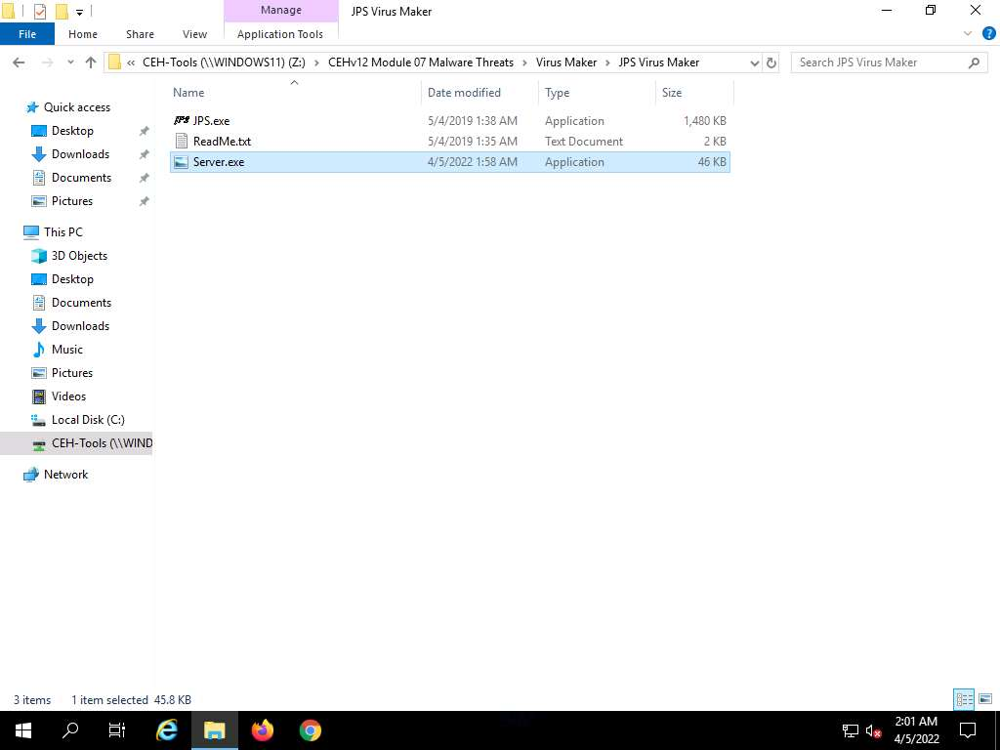
Once you have executed the virus, close the window and you can observe that the Desktop screen goes blank, indicating that the virus has infected the system, as shown in the screenshot.
Surprised by the system behavior, the victim (you) attempts to fix the machine by restarting it. Once the machine has rebooted, try to log in to the machine with the provided Username and Password. You should receive the error message the password is incorrect. Try again.
Click Ctrl+Alt+Del to activate the machine, by default, Administrator account is selected, type Pa$$w0rd in the Password field and press Enter.
Click OK and login with the password that you provided at the time of virus creation (i.e., qwerty). You should log in to the machine with the new password.
Now, try to open Task Manager; observe that an opening error pop-up appears, and then click OK.
You will get a similar error for all the applications that are disabled by the virus.
This is how attackers infect a system with viruses. Now, before going to the next task, End the lab and re-launch it to reset the machines. To do so, in the right-pane of the console, click the Finish button present under the Flags section.
Lab 3: Perform Static Malware Analysis
Lab Scenario
Attackers use sophisticated malware techniques as cyber weapons to steal sensitive data. Malware can inflict intellectual and financial losses on the target, be it an individual, a group of people, or an organization. The worst part is that it spreads from one system to another with ease and stealth.
Malware such as viruses, Trojans, worms, spyware, and rootkits allow an attacker to breach security defenses and subsequently launch attacks on target systems. Thus, to find and cure the existing infections and thwart future problems, it is necessary to perform malware analysis. Many tools and techniques exist to perform such tasks. Malware analysis provides an in-depth understanding of each individual sample and identifies emerging technology trends from large collections of malware samples without executing them. The samples of malware are mostly compatible with the Windows binary executable.
By performing malware analysis, detailed information regarding the malware can be extracted. This information includes items like the malicious intent of the malware, indicators of compromise, complexity level of the intruder, exploited vulnerability, extent of damage caused by the intrusion, perpetrator accountable for installing the malware, and system vulnerability the malware has exploited. An ethical hacker and pen tester must perform malware analysis to understand the workings of the malware and assess the damage that it may cause to the information system. Malware analysis is an integral part of any penetration testing process.
Note: It is very dangerous to analyze malware on production devices connected to production networks. Therefore, one should always analyze malware samples in a testing environment on an isolated network.
Lab Objectives
- Perform malware scanning using Hybrid Analysis
- Perform a strings search using BinText
- Identify packaging and obfuscation methods using PEid
- Analyze ELF executable file using Detect It Easy (DIE)
- Find the portable executable (PE) information of a malware executable file using PE Explorer
- Identify file dependencies using Dependency Walker
- Perform malware disassembly using IDA and OllyDbg
- Perform malware disassembly using Ghidra
Overview of Static Malware Analysis
Static Malware Analysis, also known as code analysis, involves going through the executable binary code without executing it to gain a better understanding of the malware and its purpose. The process includes the use of different tools and techniques to determine the malicious part of the program or a file. It also gathers information about malware functionality and collects the technical pointers or simple signatures it generates. Such pointers include file name, MD5 checksums or hashes, file type, and file size. Analyzing the binary code provides information about the malwares functionality, network signatures, exploit packaging technique, dependencies involved, as well as other information.
Some of the static malware analysis techniques are:
- File fingerprinting
- Local and online malware scanning
- Performing strings search
- Identifying packing and obfuscation methods
- Finding portable executable (PE) information
- Identifying file dependencies
- Malware disassembly
Task 1: Perform Malware Scanning using Hybrid Analysis
Hybrid Analysis is a free service that analyzes suspicious files and URLs and facilitates the quick detection of unknown threats such as viruses, worms, Trojans, and other kinds of malware.
It helps ethical hackers and penetration testers to examine files and URLs, enabling the identification of viruses, worms, Trojans, and other malicious content detected by anti-virus engines and website scanners.
This task will demonstrate how to analyze malware using online Hybrid Analysis services.
Click CEHv12 Windows 11 to switch to the Windows 11 machine, click Ctrl+Alt+Del.
By default, Admin user profile is selected, type Pa$$w0rd in the Password field and press Enter to login.
Note: Networks screen appears, click Yes to allow your PC to be discoverable by other PCs and devices on the network.
Open any web browser (here, Google Chrome). In the address bar of the browser place your mouse cursor, type https://www.hybrid-analysis.com and press Enter.
Note: If a cookie notification appears in the lower section of the page, then click ACCEPT.
The HYBRID ANALYSIS main page appears; click Drag & Drop For Instant Analysis section to upload a virus file.
The Open window appears; navigate to E:\CEH-Tools\CEHv12 Module 07 Malware Threats\Viruses, select tini.exe, and click Open.
Getting Things Ready page appears and the virus file begins to upload. Once it is uploaded, the status bar reaches 100%, as shown in the screenshot.
Now, enter your personal mail in Your E-mail field and enter a comment in Your Comment field. Scroll-down to check the I consent to the Terms & Conditions and Data Protection Policy checkbox and I'm not a robot checkbox. Click Continue.
Analysis Environments page appears, select Windows 7 64 bit radio-button and click Generate Public Report.
The report generation process initializes and after it completes, Analysis Overview page appears.
Note: If you receive an error in the webpage, then reload the page to obtain the result.
You can observe that the file is detected as malicious with threat score at 100 along with the additional information such as SHA value.
In the Anti-Virus Results section, you can observe the AV results obtained from different online resources such as CrowdStrike Falcon, MetaDefender and VirusTotal.
To further view the complete information obtained by the online resources you can click a link given in the Visit Vendor section. Here, we will view the AV results obtained by the VirusTotal. Click the hyperlink icon () to open the result in the new tab.
Navigate to the new tab and you can observe that the VirusTotal returns a detailed report displaying the result of each anti-virus for the selected tini.exe malicious file under the DETECTION tab, as shown in the screenshot.
Now, click the DETAILS tab to view the malicious file details such as Basic Properties, History, Names, Portable Executable Info, Sections, Imports, and ExifTool File Metadata.
Click the RELATIONS tab to view Execution Parents, PE Resource Parents, Contained in Graphs, and Graph Summary. Scroll down to view other details.
Click the BEHAVIOR tab to view the File System Actions, Process and Service Actions, Shell Commands, and Synchronization Mechanisms & Signals.
Now, close the VirusTotal tab to switch back to the previous tab.
You can further scroll-down in the results page to view information related to Hashes, Falcon reports and Incident Response.
This concludes the demonstration of malware scanning using Hybrid Analysis.
Close all open windows.
You can also use other local and online malware scanning tools such as Valkyrie (https://valkyrie.comodo.com), Cuckoo Sandbox (https://cuckoosandbox.org), Jotti (https://virusscan.jotti.org) or IObit Cloud (https://cloud.iobit.com) to perform online malware scanning.
Task 2: Perform a Strings Search using BinText
Software programs include some strings that are commands to perform specific functions such as printing output. Strings communicate information from a program to its user. Various strings that could represent the malicious intent of a program such as reading the internal memory or cookie data, are embedded in the compiled binary code.
Searching through strings can provide information about the basic functionality of any program. During malware analysis, search for malicious strings that could determine the harmful actions that a program can perform. For instance, if the program accesses a URL, it will have that URL string stored in it. You should be attentive while looking for strings and search for the embedded and encrypted strings for a complete analysis of the suspect file.
BinText is a text extractor that can extract text from any file. It includes the ability to find plain ASCII text, Unicode text, and Resource strings, providing useful information for each item.
Here, we will use the BinText tool to extract embedded strings from executable files.
On the Windows 11 machine, navigate to E:\CEH-Tools\CEHv12 Module 07 Malware Threats\Malware Analysis Tools\Static Malware Analysis Tools\String Searching Tools\BinText and double-click bintext.exe.
The BinText main window appears; click Browse to provide a file to scan. Here, we need to provide a malicious file to analyze the text.
Make sure that the Advanced view option is checked.
The Open file for Scanning window appears, navigate to E:\CEH-Tools\CEHv12 Module 07 Malware Threats\Viruses\Klez Virus Live! and select face.exe, the malicious file, and click Open to extract the text from the malicious file.
As soon as the file is provided for scan, click Go. BinText will start extracting the text from the designated malicious file.

BinText extracts the provided malicious files critical information, as shown in the screenshot.
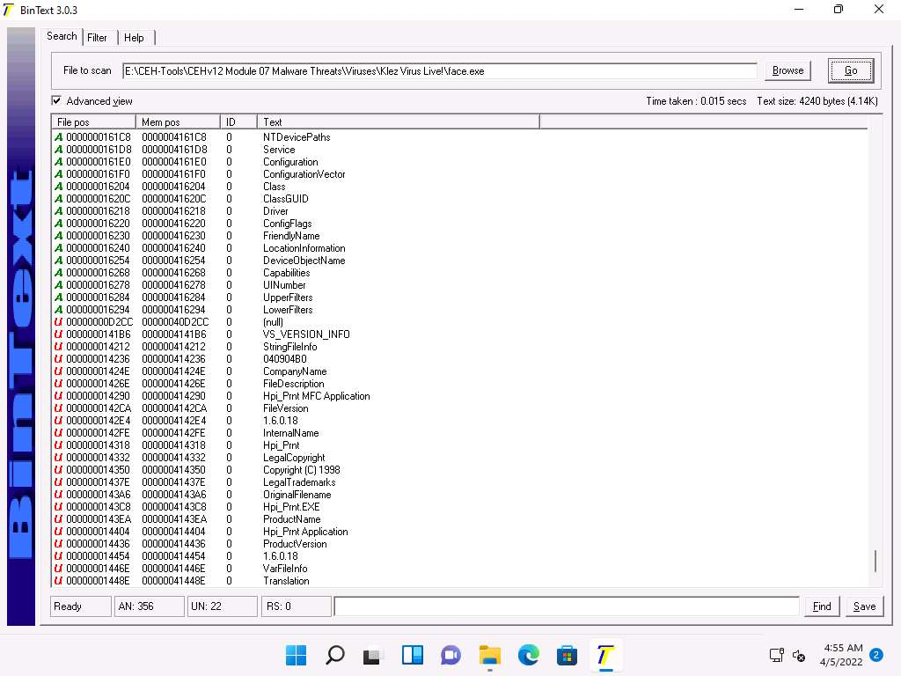
The type of string is designated by a colored letter to the left of the list. ANSI strings are marked with a green A, Unicode strings (double byte ANSI) have a red U, and resource strings have a blue R.
File pos is the HEX position at which the text is located in the file.
Mem pos if the file is a Win32 PE file (such as Win95 EXEs and DLLs), then this is the HEX address at which the text is referred to in the memory at runtime, as determined by its sections table.
ID is the decimal string resource ID or 0 if it is not a resource string.
Close all windows once the analysis is complete.
You can also use other string searching tools such as FLOSS (https://www.fireeye.com), Strings (https://docs.microsoft.com), Free EXE DLL Resource Extract (https://www.resourceextract.com), or FileSeek (https://www.fileseek.ca) to perform string search.
Task 3: Identify Packaging and Obfuscation Methods using PEid
Attackers often use packing and obfuscation or a packer to compress, encrypt, or modify a malware executable file to avoid detection. Obfuscation also hides the execution of the programs. When the user executes a packed program, it also runs a small wrapper program to decompress the packed file, and then runs the unpacked file. It complicates the task of reverse engineers to determine the actual program logic and other metadata via static analysis. The best approach is to try and identify if the file includes packed elements and locate the tool or method used to pack it.
PEid is a free tool that provides details about Windows executable files. It can identify signatures associated with over 600 different packers and compilers. This tool also displays the type of packer used in packing a program.
Here, we will use the PEid tool to detect common packers, cryptors, and compilers for PE executable files.
In the Windows 11 machine, navigate to E:\CEH-Tools\CEHv12 Module 07 Malware Threats\Malware Analysis Tools\Static Malware Analysis Tools\Packaging and Obfuscation Tools\PEid and double-click PEiD.exe.
The PEiD main window appears. Click the Browse button to upload a malicious file for analysis.
The Choose the file to open window appears; navigate to E:\CEH-Tools\CEHv12 Module 07 Malware Threats\Viruses\Klez Virus Live!, select the face.exe file, and click Open.
As soon as you click Open, PEiD analyzes the file and provides information, as shown in the screenshot.
Close all windows once the analysis is complete.
Task 4: Analyze ELF Executable File using Detect It Easy (DIE)
The Executable and Linkable Format (ELF) is a generic executable file format in Linux environment. It contains three main components including ELF header, sections, and segments. Each component plays an independent role in the loading and execution of ELF executables. The static analysis of an ELF file involves investigating an ELF executable file without running or installing it. It also involves accessing the binary code and extracting valuable artifacts from the program. Numerous tools can be used to perform static analysis on ELF files. In this task, we will be using Detect It Easy (DIE) tool to analyze ELF file.
Detect It Easy (DIE) is an application used for determining the types of files. Apart from the Windows, DIE is also available for Linux and Mac OS. It has a completely open architecture of signatures and can easily add its own algorithms for detecting or modifying the existing signatures. It detects a files compiler, linker, packer, etc. using a signature-based detection method.
In the Windows 11 machine, navigate to E:\CEH-Tools\CEHv12 Module 07 Malware Threats\Malware Analysis Tools\Static Malware Analysis Tools\Packaging and Obfuscation Tools\DIE and double-click die.exe.
Open File - Security Warning appears, click Run.
Detect It Easy window appears. Click ellipses icon next to the File name text field.
The Open file window appears; navigate to E:\CEH-Tools\CEHv12 Module 07 Malware Threats\Viruses, select ELF Test File, and click Open.

Detect It Easy automatically scans the file and result appears showing the Operating system, compiler and language details in the middle pane, as shown in the screenshot.
Click File info button from the top right corner of the window. Info window appears, you can observe information such as File name, size, MD5, SHA1, Entrophy, entry points, etc.
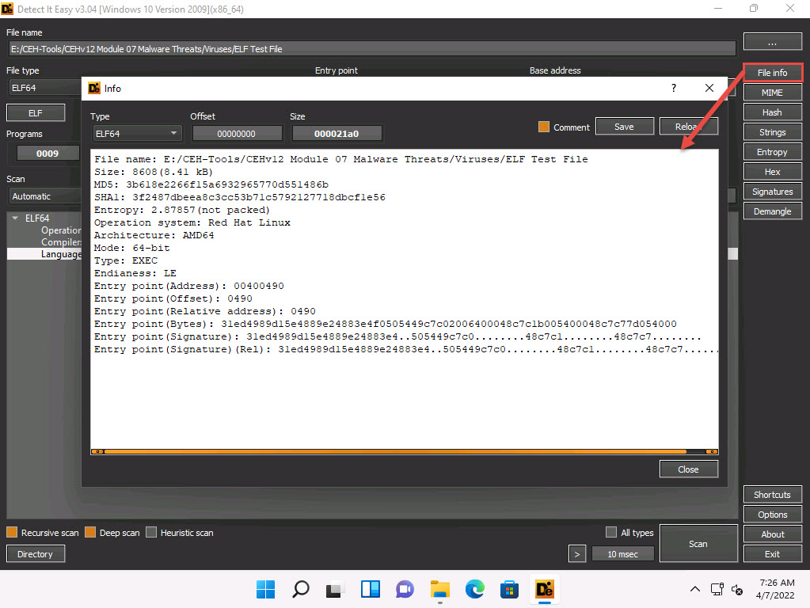
After viewing the information, click Close to close it.
Similarly, click Hash button from the top right corner of the window to view the information related to hash. Click Close to close the window.
Click Entropy button from the top right corner of the window. Here, you can observe the status, size and graph of entropy. Click Close to close the window.
Similarly, you can further explore other functions such as MIME, Hex, Signatures and Demangle.
This concludes the demonstration of ELF file analysing using Detect It Easy (DIE).
Close all the open windows.
You can also use other packaging/obfuscation tools such as Macro_Pack (https://github.com), UPX (https://upx.github.io), or ASPack (http://www.aspack.com) to identify packing/obfuscation methods.
Task 5: Find the Portable Executable (PE) Information of a Malware Executable File using PE Explorer
The Portable Executable (PE) format is the executable file format used on Windows OSes that stores the information a Windows system requires to manage the executable code. The PE stores metadata about the program, which helps in finding additional details of the file. For instance, the Windows binary is in PE format that consists of information such as time of creation and modification, import and export functions, compilation time, DLLs, and linked files, as well as strings, menus, and symbols.
PE Explorer lets you open, view, and edit a variety of different 32-bit Windows executable file types (also called PE files) ranging from common such as EXE, DLL, and ActiveX Controls to less familiar types such as SCR (Screensavers), CPL (Control Panel Applets), SYS, MSSTYLES, BPL, DPL, and more (including executable files that run on MS Windows Mobile platform).
Here, we will use the PE Explorer tool to view the PE information of a malware executable file.
On the Windows 11 machine, navigate to E:\CEH-Tools\CEHv12 Module 07 Malware Threats\Malware Analysis Tools\Static Malware Analysis Tools\PE Extraction Tools\PE Explorer and double-click PE.Explorer_setup.exe.
If a User Account Control pop-up appears, click Yes.
Follow the wizard-driven installation steps to install PE Explorer.
In the last step of the installation, make sure that the Launch PE Explorer option is checked to launch the application automatically; uncheck the View PE Explorer Users Guide option and click Finish.
The PE Explorer main window appears. Navigate to File and click Open File from the menu to start exploring executable files. You can drag and drop the file into the PE Explorer window.
An open window appears; navigate to E:\CEH-Tools\CEHv12 Module 07 Malware Threats\Viruses\Klez Virus Live!. Select the face.exe file and click Open.
The PE Explorer evaluation pop-up appears; click Continue.
PE Explorer provides you with an analysis of the file, as shown in the screenshot.
The HEADERS INFO section provides you with the ability to:
- View and save a text report on the file headers information
- Modify the entry point value
- Updates the value of the checksum in the header
- Set flag bits in the file header characteristics field
Click the Data Directories icon ()) from the menu bar. This will provide you with the DATA DIRECTORIES information such as the ability to view and edit the virtual address and size of the chosen directory describing provisions of parts of the code.
The trailing array of Data Directories cover pointers to the data in the sections.
Click Section Headers icon () from the menu bar. This will provide you with the SECTION HEADERS information, allowing you to view all sections and information about their location and size.
Double click on any section to view the raw content. This will open a mini hex viewer window.
Close the hex viewer window after analysis.

This is how to analyze a malicious file using PE Explorer. Close all open windows.
You can also use other PE extraction tools such as Portable Executable Scanner (pescan) (https://tzworks.net), Resource Hacker (http://www.angusj.com), or PEView (https://www.aldeid.com) to find the Portable Executable (PE) information of a malware executable file.
Task 6: Identify File Dependencies using Dependency Walker
Any software program depends on the various inbuilt libraries of an OS that help in performing specified actions in a system. Programs need to work with internal system files to function correctly. Programs store their import and export functions in a kernel32.dll file. File dependencies contain information about the internal system files that the program needs to function properly; this includes the process of registration and location on the machine.
Find the libraries and file dependencies, as they contain information about the run-time requirements of an application. Then, check to find and analyze these files to provide information about the malware in the file. File dependencies include linked libraries, functions, and function calls. Check the dynamically linked list in the malware executable file. Finding out all library functions may allow guessing about what the malware program can do. You should know the various DLLs used to load and run a program.
Some of the standard DLLs are:
The Dependency Walker tool lists all dependent modules of an executable file and builds hierarchical tree diagrams. It also records all functions that each module exports and calls. Further, it detects many common application problems such as missing and invalid modules, import and export mismatches, circular dependency errors, mismatched machine modules, and module initialization failures.
Here, we will use the Dependency Walker tool to identify the file dependencies of an executable file.
On the Windows 11 machine, navigate to E:\CEH-Tools\CEHv12 Module 07 Malware Threats\Malware Analysis Tools\Static Malware Analysis Tools\File Dependency Checking Tools\Dependency Walker, and double-click depends.exe.
The Dependency Walker main window appears; navigate to File and click Open to import the malicious file.
The open window appears; navigate to E:\CEH-Tools\CEHv12 Module 07 Malware Threats\Viruses\Klez Virus Live!. Select the snoopy.exe file and click Open.
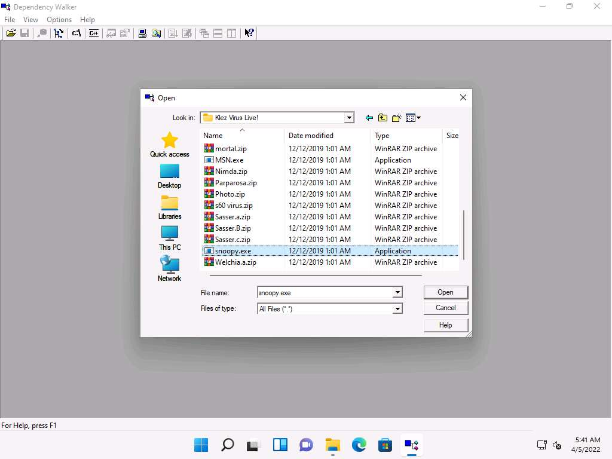
The Dependency Walker pop-up appears, along with the error detected while processing the file; click OK.
The SNOOPY.EXE file is imported to the Dependency Walker, as shown in the screenshot.
Shrink the .DLL nodes to view all available DLLs for the malicious file.
The available DLLs for snoopy.exe are listed in the left-pane of the window, as shown in the screenshot.
Click on any DLL dependency to view the details of the DLL file. In this task, we are choosing KERNEL32.DLL.
As soon as you select the DLL, the Dependency Walker displays the DLL details in the Import Section and Export Section, as shown in the screenshot.
Analyze all DLL dependencies of the imported malicious file. Close all open windows once the analysis is complete.
You can also use other dependency checking tools such as Dependency-check (https://jeremylong.github.io), Snyk (https://snyk.io), or RetireJS (https://retirejs.github.io) to identify file dependencies.
Task 7: Perform Malware Disassembly using IDA and OllyDbg
Static analysis also includes the dismantling of a given executable into binary format to study its functionalities and features. This process helps identify the language used for programming the malware, look for APIs that reveal its function, and retrieve other information. Based on the reconstructed assembly code, you can inspect the program logic and recognize its threat potential. This process uses debugging tools such as IDA Pro and OllyDbg.
IDA As a disassembler, IDA explores binary programs, for which the source code might not be available, to create maps of their execution. The primary purpose of a disassembler is to display the instructions actually executed by the processor in a symbolic representation called assembly language. However, in real life, things are not always simple. Hostile code usually does not cooperate with the analyst. Viruses, worms, and Trojans are often armored and obfuscated; as such, more powerful tools are required. The debugger in IDA complements the static analysis capabilities of the disassembler. By allowing an analyst to single-step through the code being investigated, the debugger often bypasses the obfuscation. It helps obtain data that the more powerful static disassembler will be able to process in depth.
OllyDbg OllyDbg is a debugger that emphasizes binary code analysis, which is useful when source code is unavailable. It traces registers, recognizes procedures, API calls switches, tables, constants, and strings, and locates routines from object files and libraries.
There is a new debugging option, Set permanent breakpoints on system calls. When active, it requests OllyDbg to set breakpoints on KERNEL32.UnhandledExceptionFilter(), NTDLL.KiUserExceptionDispatcher(), NTDLL.ZwContinue(), and NTDLL.NtQueryInformationProcess().
In the Windows 11 machine, click Search icon () on the Desktop. Type ida in the search field, the IDA Freeware appears in the result, click Open to launch it.
If the IDA License window appears, click on I Agree.
User interface telemetry window appears, uncheck Yes, I want to help improve IDA checkbox and click OK.
The IDA: Quick start pop-up appears; click on New to select a malicious file for disassembly.
The IDA main window appears, along with the Select file to disassemble window.
In the Select file to disassemble window, navigate to E:\CEH-Tools\CEHv12 Module 07 Malware Threats\Viruses\Klez Virus Live!, select face.exe, and click Open.
The Load a new file window appears; by default, the Portable executable for 80386 (PE) [pe64.dll] option selected; click OK.
If a Warning pop-up appears, click OK.
If a Please confirm dialog-box appears, read the instructions carefully, and then click Yes.
IDA completes the analysis of the imported malicious file and displays the results in the IDA View-A tab, as shown in the screenshot.
In the IDA View-A section, right-click anywhere and choose Text view from the context menu to view the text information of the malicious file uploaded to IDA for analysis.
This reveals the text view of the malicious file, allowing analysis of its information.
Now, minimize the IDA window, and navigate to E:\CEH-Tools\CEHv12 Module 07 Malware Threats\Malware Analysis Tools\Static Malware Analysis Tools\Disassembling and Debugging Tools\IDA. Copy the qwingraph.exe file and paste it in IDAs installation location. In this task, the location is C:\Program Files\IDA Freeware 7.7.
Note: If a Destination Folder Access Denied notification appears, click Continue.
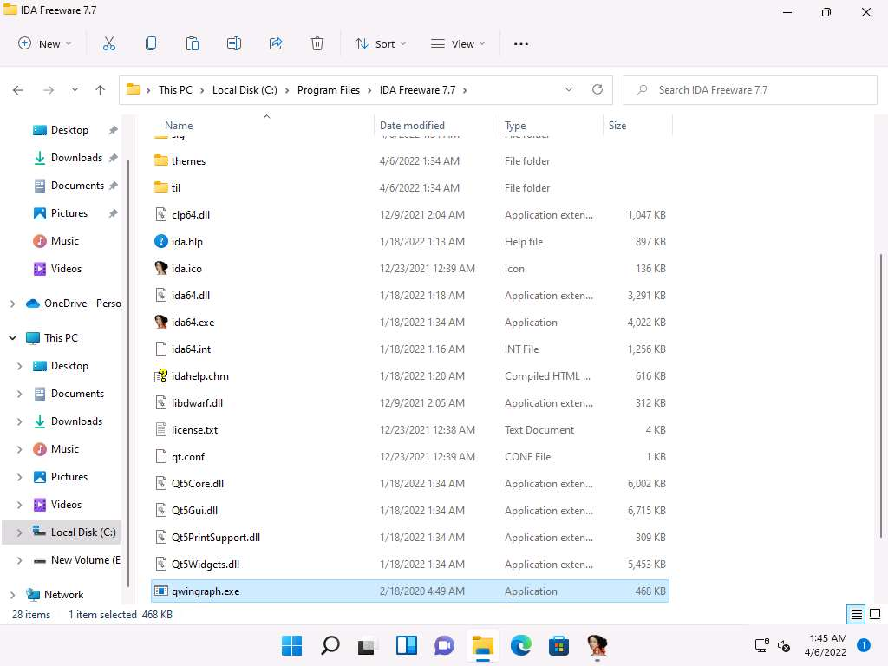
Maximize the IDA window. To view the flow of the uploaded malicious file, navigate to View --> Graphs and click Flow chart.
A Graph window appears with the flow. You may zoom in and adjust the screen to view this more clearly.
Close the Graph window, go to View --> Graphs, and click Function calls from the menu bar.
A window showing call flow appears; zoom in for a better view. Close the WinGraph32 Call flow window after completing the analysis.
Click the HexView-1 tab to view the hex value of the malicious file.
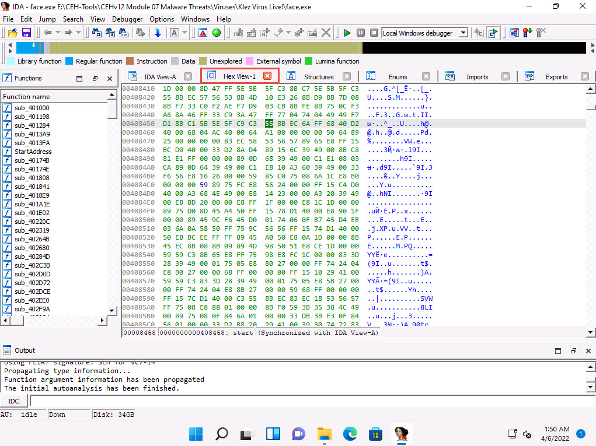
Click the Structures tab to view the structure of the file, as shown in the screenshot.

Click the Enums tab to view the Windows Enum results, as shown in the screenshot
Close all open windows. In the Save database pop-up, click OK.
Navigate to E:\CEH-Tools\CEHv12 Module 07 Malware Threats\Malware Analysis Tools\Static Malware Analysis Tools\Disassembling and Debugging Tools\OllyDbg and double-click OLLYDBG.EXE.
Note: If an Open File - Security Warning pop-up appears, click Run.
If a UDD Directory Absent dialog box appears, click OK.
If an OllyDbg warning message appears, for administrative rights, click OK.
The OllyDbg main window appears, as shown in the screenshot.
Note: When you launch OllyDbg for the first time, several sub-windows might appear in the main window of OllyDbg; close all of them.
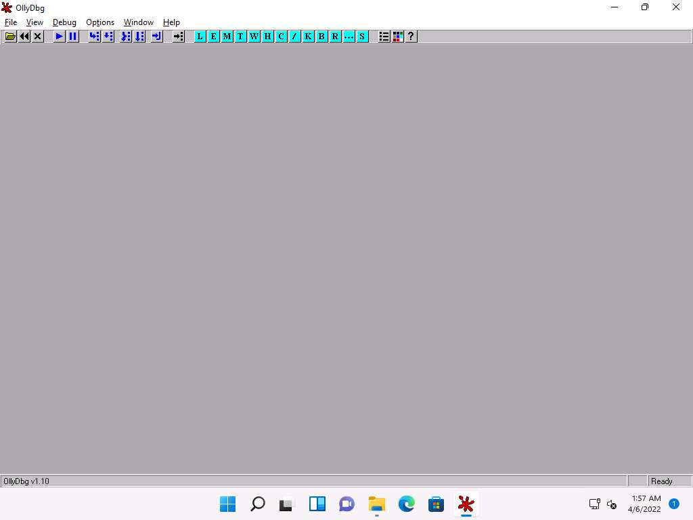
Choose File from the menu bar, and then choose Open.
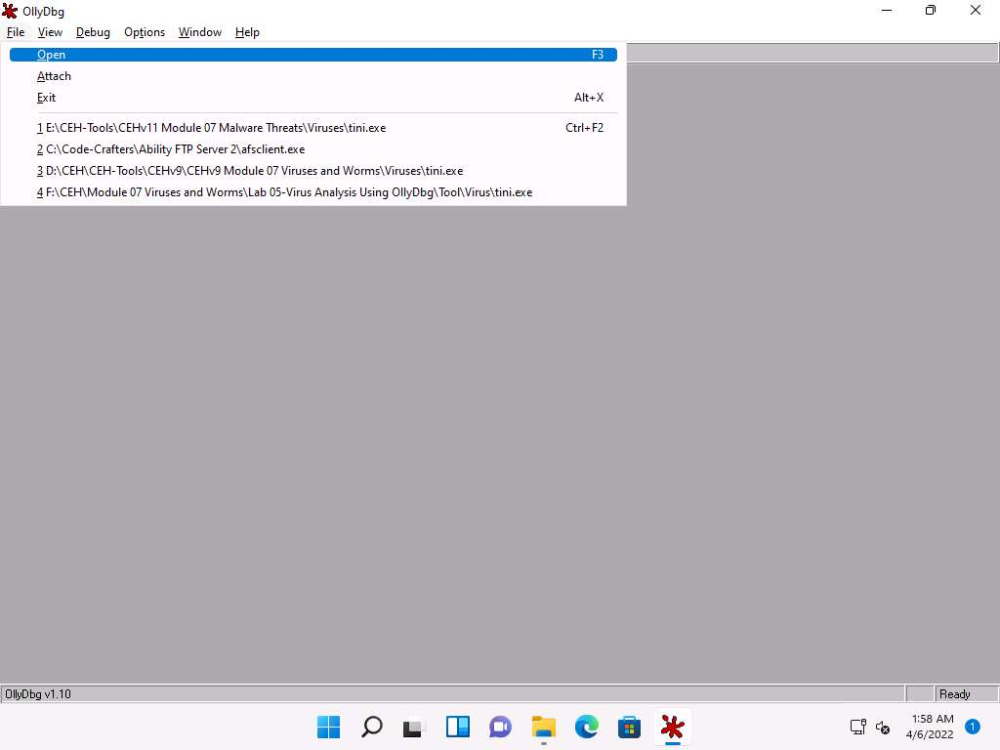
The Open 32-bit executable window appears; navigate to E:\CEH-Tools\CEHv12 Module 07 Malware Threats\Viruses, select tini.exe, and click Open.
The output appears in a window named CPU - main thread, module tini, maximize the window.
Choose View in the menu bar, and then choose Log.
A window named Log data appears in OllyDbg, displaying the log details, as shown in the screenshot.
The Log data also displays the program entry point and its calls to known functions. Close the Log data window after completing the analysis.
Choose View in the menu bar, and then choose Executable modules.
A window named Executable modules appears in OllyDbg, displaying all executable modules, as shown in the screenshot.
Double-click any module to view the complete information of the selected module.
In this task, we are choosing the 73120000 module. The results might differ when you perform this task.
This will redirect you to the CPU - main thread window, as shown in the screenshot.

Choose View in the menu bar, and then choose Memory.

A window named Memory map appears in OllyDbg, displaying all memory mappings, as shown in the screenshot. Close the Memory map window.
Choose View in the menu bar, and then choose Threads.
A window named Threads appears in OllyDbg, displaying all threads, as shown in the screenshot.
This way, you can scan files and analyze the output using OllyDbg.
Close all open windows.
Task 8: Perform Malware Disassembly using Ghidra
Ghidra is a software reverse engineering (SRE) framework that includes a suite of full-featured, high-end software analysis tools that enable users to analyze compiled code on a variety of platforms including Windows, MacOS, and Linux. It's capabilities include disassembly, assembly, decompilation, debugging, emulation, graphing, and scripting. Ghidra supports a wide variety of processor instruction sets and executable formats and can be run in both user-interactive and automated modes. Analysts can also develop their own Ghidra plug-in components and/or scripts using the exposed API. In addition there are numerous ways to extend Ghidra such as new processors, loaders/exporters, automated analyzers, and new visualizations.
Here, we will use Ghidra to perform malware disassembly.
In the Windows 11 machine, navigate to E:\CEH-Tools\CEHv12 Module 07 Malware Threats\Malware Analysis Tools\Static Malware Analysis Tools\Disassembling and Debugging Tools\Ghidra and double-click ghidraRun.bat.
If a Command Prompt window appears, then type C:\Program Files\jdk-17.0.2+8 and press Enter.
Ghidra initializes, a Tip of the Day pop-up appears, click Close to close it.
Ghidra: NO ACTIVE PROJECT window appears, click File and select New Project.
New Project window appears, leave the default selected option to Non-Shared Project and click Next.
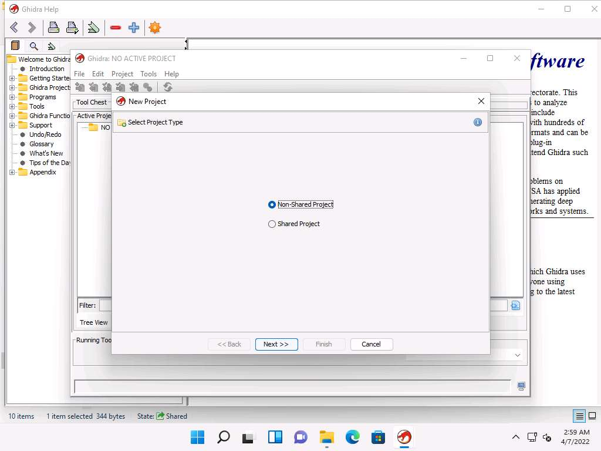
In the next window, enter the Project Name as Malware Analysis and click Finish.
A new project with the name as Malware Analysis has been created, as shown in the screenshot.
Now, navigate to File --> Import File.

Select File to Import window appears, navigate to E:\CEH-Tools\CEHv12 Module 07 Malware Threats\Viruses\Klez Virus Live!, select face.exe, and click Select File to Import.
Import window appears, click OK.
After the completion of file import, Import Results Summary window appears, click OK.
You can observe that Face.exe is added as a children node under the Malware Analysis project. Double-click Face.exe node.
Analyze pop-up appears, click Yes.
Analyze Options window appears, leave the default options and click Analyze.
This initiates the analysis process, you can monitor the status bar present at the lower right section of the window. Wait for it to complete.
After the analysis, assembly code of face.exe file appears along with the decompiler, as shown in the screenshot.
In the right pane, under Symbol Tree, you can observe various components of face.exe file such as Imports, Exports, Functions and Labels.

Click to expand Imports node and you can view the DLL files of face.exe.
Similarly, you can view other components under Symbol Tree to obtain additional information on face.exe.
Close the Decompiler tab.
Now, In the right-pane, under Program Tree, double-click Headers node to jump to the header function in the code snippet.
Similarly, double-click .rdata node to view the rdata function in the code snippet.
You can further explore various other functionalities in the Ghidar tool to analyze the face.exe file.
This concludes the demonstration of malware disassembly using Ghidra.
Close all the open windows.
You can also use other disassembling and debugging tools such as Radare2 (https://rada.re), WinDbg (http://www.windbg.org), and ProcDump (https://docs.microsoft.com) to perform malware disassembly.
Lab 4: Perform Dynamic Malware Analysis
Lab Scenario
Dynamic Malware Analysis, also known as behavioral analysis, involves executing malware code to learn how it interacts with the host system and its impact after infecting the system.
Dynamic analysis involves the execution of malware to examine its conduct and operations and identify technical signatures that confirm the malicious intent. It reveals information such as domain names, file path locations, created registry keys, IP addresses, additional files, installation files, and DLL and linked files located on the system or network.
This type of analysis requires a safe environment such as machines and sandboxes to deter the spreading of malware. The environment design should include tools that can capture every movement of the malware in detail and give feedback. Typically, systems act as a base for conducting such experiments.
An ethical hacker and pen tester must perform dynamic malware analysis to find out about the applications and processes running on a computer and remove unwanted or malicious programs that can breach privacy or affect the systems health.
Lab Objectives
- Perform port monitoring using TCPView and CurrPorts
- Perform process monitoring using Process Monitor
- Perform registry monitoring using Reg Organizer
- Perform Windows services monitoring using Windows Service Manager (SrvMan)
- Perform startup program monitoring using Autoruns for Windows and WinPatrol
- Perform installation monitoring using Mirekusoft Install Monitor
- Perform files and folder monitoring using PA File Sight
- Perform device driver monitoring using DriverView and Driver Reviver
- Perform DNS monitoring using DNSQuerySniffer
Overview of Dynamic Malware Analysis
Dynamic analysis is performed to gather valuable information about malware activity, including the files and folders created, ports and URLs accessed, called functions and libraries, applications and tools accessed, information transferred, settings modified processes, and services the malware started, and other items. You should design and set up the environment for performing the dynamic analysis in such a way that the malware cannot propagate to the production network, and ensure that the testing system can recover to an earlier set timeframe (prior to launching the malware) in case anything goes wrong during the test.
To achieve this, you need to perform the following:
System Baselining Baselining refers to the process of capturing a systems state (taking snapshot of the system) at the time the malware analysis begins. This can be used to compare the systems state after executing the malware file, which will help understand the changes that the malware has made across the system. A system baseline involves recording details of the file system, registry, open ports, network activity, and other items.
Host Integrity Monitoring Host integrity monitoring is the process of studying the changes that have taken place across a system or a machine after a series of actions or incidents. It involves using the same tools to take a snapshot of the system before and after the incident or actions and analyzing the changes to evaluate the malwares impact on the system and its properties. In malware analysis, host integrity monitoring helps to understand the runtime behavior of a malware file as well as its activities, propagation techniques, URLs accessed, downloads initiated, and other characteristics.
Host integrity monitoring includes:
- Port monitoring
- Process monitoring
- Registry monitoring
- Windows services monitoring
- Startup program monitoring
- Event logs monitoring and analysis
- Installation monitoring
- Files and folder monitoring
- Device driver monitoring
- Network traffic monitoring and analysis
- DNS monitoring and resolution
- API calls monitoring
Task 1: Perform Port Monitoring using TCPView and CurrPorts
We know that the Internet uses a software protocol named TCP/IP to format and transfer data. Malware programs corrupt the system and open system input and output ports to establish connections with remote systems, networks, or servers to accomplish various malicious tasks. These open ports can also act as backdoors or communication channels for other types of harmful malware and programs. They open unused ports on the victims machine to connect back to the malware handlers.
You can identify the malware trying to access a particular port by installing port monitoring tools such as TCPView and CurrPorts.
TCPView TCPView is a Windows program that shows the detailed listings of all the TCP and UDP endpoints on the system, including the local and remote addresses, and the state of the TCP connections. It provides a subset of the Netstat program that ships with Windows. The TCPView download includes Tcpvcon, a command-line version with the same functionality. When TCPView runs, it enumerates all active TCP and UDP endpoints, resolving all IP addresses to their domain name versions.
CurrPorts CurrPorts is a piece of network monitoring software that displays a list of all the currently open TCP/IP and UDP ports on a local computer. For each port in the list, information about the process that opened the port is also displayed, including the process name, full path of the process, version information of the process (product name, file description, etc.), the time that the process was created, and the user that created it.
In addition, CurrPorts allows you to close unwanted TCP connections, kill the process that opened the ports, and save the TCP/UDP port information to an HTML file, XML file, or to tab-delimited text file.
CurrPorts also automatically marks suspicious TCP/UDP ports owned by unidentified applications (Applications without version information and icons) in pink.
Note: This lab activity demonstrates how to analyze malicious processes running on a machine using TCPView and CurrPorts. Here, you will first create a server using njRAT, and then execute this server from the second machine. Later, you will run the TCPView and CurrPorts applications on the second machine and find that the process associated with the server is running on it.
In the Windows 11 machine, navigate to E:\CEH-Tools\CEHv12 Module 07 Malware Threats\Trojans Types\Remote Access Trojans (RAT)\njRAT and double-click njRAT v0.7d.exe to launch njRAT. Click Start.
The njRAT GUI appears; click the Builder link located in the lower-left corner of the GUI to configure the exploit details.
The Builder dialog-box appears; enter the IP address of the Windows 11 (attacker machine) machine in the Host field, check the option Registy StarUp, rename ExeName as Trojan.exe. Leave the other settings to default, and click Build.
Note: In this task, the IP address of the Windows 11 machine is 10.10.1.11.
Save As window appears, E:\CEH-Tools\CEHv12 Module 07 Malware Threats\Trojans Types\Remote Access Trojans (RAT)\njRAT. In the File name, enter Trojan.exe and click Save. Done! pop-up appears, click OK.
Minimize njRAT window. You can observe that a Trojan.exe file has been created at the location E:\CEH-Tools\CEHv12 Module 07 Malware Threats\Trojans Types\Remote Access Trojans (RAT)\njRAT.

Click CEHv12 Windows Server 2022 to switch to the Windows Server 2022 machine. Click Ctrl+Alt+Del to activate the machine, by default, CEH\Administrator account is selected, type Pa$$w0rd in the Password field and press Enter.
Note: Networks screen appears, click Yes to allow your PC to be discoverable by other PCs and devices on the network.

Navigate to Z:\CEHv12 Module 07 Malware Threats\Trojans Types\Remote Access Trojans (RAT)\njRAT and double-click Trojan.exe.
Observe that a connection has been established by the njRAT client. Click CEHv12 Windows 11 to switch to the Windows 11 machine. Switch to njRAT window to observe the established connection.
Now, let us analyze this process on Windows Server 2022 using TCPView tool. Click CEHv12 Windows Server 2022 to switch back to the Windows Server 2022 machine.
Navigate to Z:\CEHv12 Module 07 Malware Threats\Malware Analysis Tools\Dynamic Malware Analysis Tools\Port Monitoring Tools\TCPView and double-click Tcpview.exe to launch the application.
Note: If a User Account Control pop-up appears, click Yes.
If a TCPView License Agreement window appears, click the Agree button to agree to the terms and conditions.
The TCPView main window appears, displaying the details such as Process, ProcessId, Protocol, Local Address, Local Port, Remote Address, Remote Port, and State, as shown in the screenshot.
TCPView performs Port monitoring. Click the Local Port tab to view the ports in serial order.
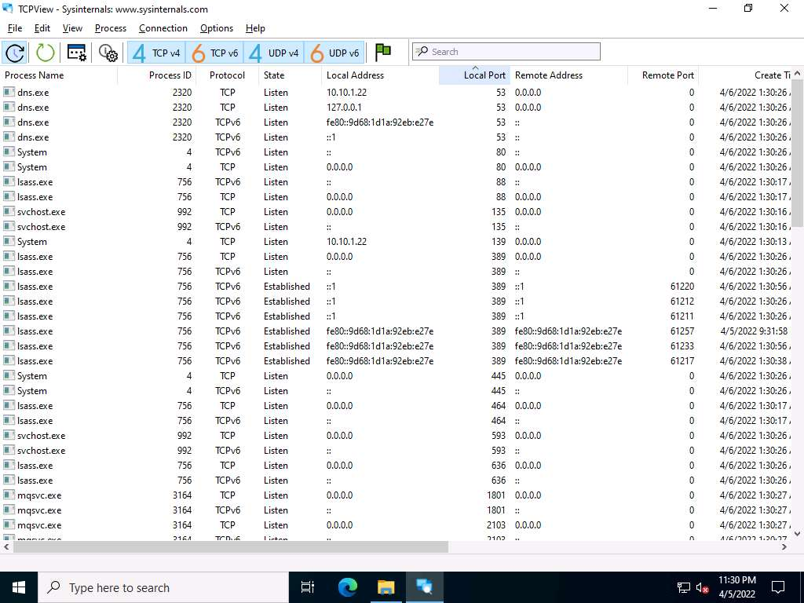
Observe the protocols running on different ports under the Protocol column.
As you have executed a malicious application, now search for the Trojan.exe process in the TCPView.
You can observe that the Trojan.exe malicious program is running on the Windows Server 2022 machine. You can see details such as Remote Address and Remote Port.
Right-click the process Trojan.exe; select Kill Process to end the running process.
Normally, if a TCPView dialog box appears, click OK to terminate the process. However, for this task, do not Kill the process in this step as we are going to use this running process for the next task; click Cancel.
This way, you can view all processes running on the machine and stop unwanted or malicious processes that may affect your system. If you are unable to stop a process, you can view the port on which it is running and add a firewall rule to block the port.
Close the TCPView window.
Now, let us analyze this process on Windows Server 2022 using CurrPorts.
Navigate to Z:\CEHv12 Module 07 Malware Threats\Malware Analysis Tools\Dynamic Malware Analysis Tools\Port Monitoring Tools\CurrPorts and double-click cports.exe.
The CurrPorts window appears, displaying a list of currently open TCP/IP and UDP ports on the machine.
Scroll-down to search for Trojan.exe process running on the machine, as the shown in the screenshot. It is evident from the above screenshot that the process is connected to the machine on port 5552.

You can view the properties of the process by right-clicking on the process and clicking Properties from the Context menu.
The Properties window appears, displaying information related to the process such as the name of the process, its process ID, Remote Address, Process Path, Remote Host Name, and other details.
Once you are done examining the properties associated with the process, click OK.
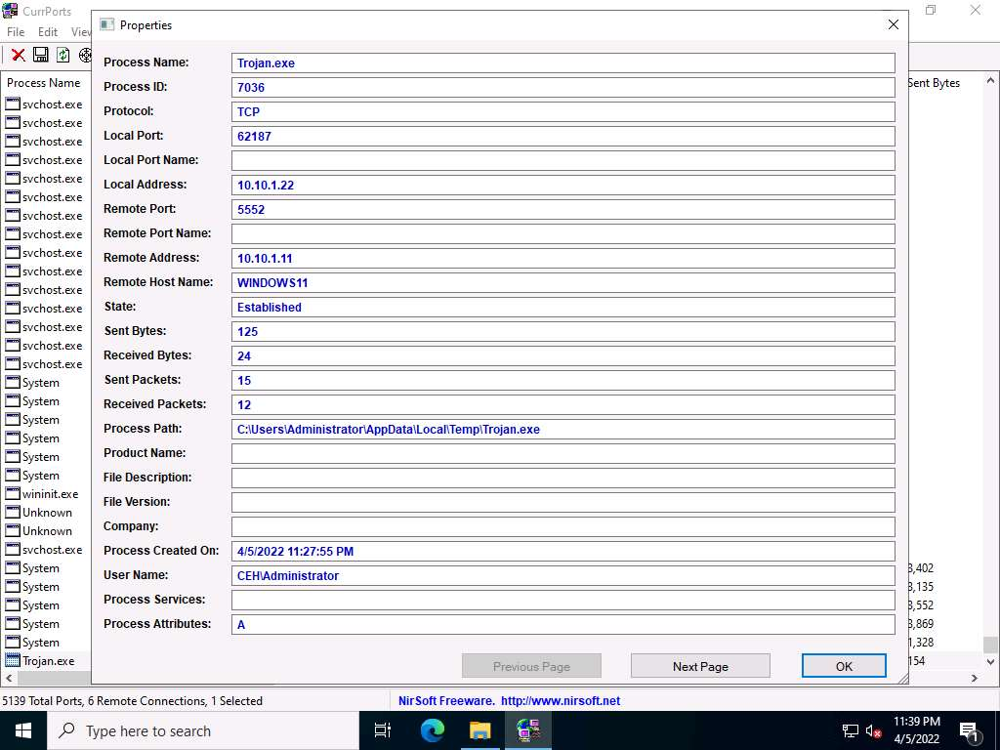
Because Trojan.exe is a malicious process, you may end the process by right-clicking on it and selecting Kill Processes Of Selected Ports from the context menu.
Alternatively, you may select Close Selected TCP Connections, so that the port closes, and the attacker can never regain connection through the port unless you open it.
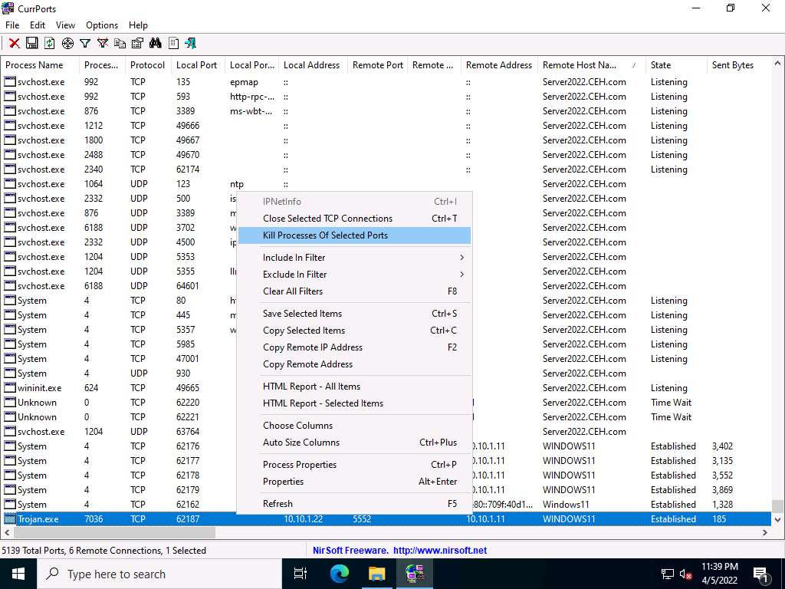
Normally, when the CurrPorts dialog-box appears, you would click Yes to close the connection. However, do not Kill the process at this step, as this running process will be used for the next task; click No.
This way, you can analyze the ports open on a machine and the processes running on it.
If a process is found to be suspicious, you may either kill the process or close the port.
Close all open windows.
You can also use other port monitoring tools such as Port Monitor (https://www.port-monitor.com), TCP Port Monitoring (https://www.dotcom-monitor.com), or PortExpert (https://www.kcsoftwares.com) to perform port monitoring.
Task 2: Perform Process Monitoring using Process Monitor
Process monitoring will help in understanding the processes that malware initiates and takes over after execution. You should also observe the child processes, associated handles, loaded libraries, functions, and execution flow of boot time processes to define the entire nature of a file or program, gather information about processes running before the execution of the malware, and compare them with the processes running after execution. This method will reduce the time taken to analyze the processes and help in easy identification of all processes that malware starts.
Process Monitor is a monitoring tool for Windows that shows the real-time file system, Registry, and process and thread activity. It combines the features of two legacy Sysinternals utilities, Filemon and Regmon. It adds an extensive list of enhancements including rich and non-destructive filtering, comprehensive event properties such session IDs and user names, reliable process information, full thread stacks with integrated symbol support for each operation, and simultaneous logging to a file. Unique features of Process Monitor make it a core utility in system troubleshooting and vital to the malware hunting toolkit.
Here, we will use the Process Monitor tool to detect suspicious processes.
On the Windows Server 2022 machine, navigate to Z:\CEHv12 Module 07 Malware Threats\Malware Analysis Tools\Dynamic Malware Analysis Tools\Process Monitoring Tools\ProcessMonitor and double-click Procmon.exe to launch the Process Monitor tool.
The Process Monitor License Agreement window appears; click Agree.
The Process Monitor main window appears, as shown in the screenshot, with the processes running on the machine.
Scroll-down to look for the Trojan.exe process that was executed in the previous task. If you killed the process at the end of the task, then navigate to Z:\CEHv12 Module 07 Malware Threats\Trojans Types\Remote Access Trojans (RAT)\njRAT and double-click Trojan.exe to re-execute the malicious program.
Observe that the Trojan.exe process is running on the machine. Process Monitor shows the running process details such as the PID, Operation, Path, Result, and Details.
To view the properties of a running process, select the process (here, Trojan.exe), right-click on the process and select Properties from the context menu.
The Event Properties window appears with the details of the chosen process.
In the Event tab, you can see the complete details of the running process such as Date, Thread, Class, Operation, Result, Path, and Duration.
Once the analysis is complete, click the Process tab.
The Process tab shows the complete details of the process running, as shown in the screenshot.
Click the Stack tab to view the supported DLLs of the selected process. Once the analysis is done, click Close.
This way, you can analyze the processes running on a machine.
If a process is found to be suspicious, you may either kill the process or close the port.
Close all windows on the Windows 11 and Windows Server 2022 machines.
You can also use other process monitoring tools such as Process Explorer (https://docs.microsoft.com), OpManager (https://www.manageengine.com), Monit (https://mmonit.com), or ESET SysInspector (https://www.eset.com) to perform process monitoring.
Task 3: Perform Registry Monitoring using Reg Organizer
The Windows Registry stores OS and program configuration details such as settings and options. If the malware is a program, the registry stores its functionality. When an attacker installs a type of malware on the victims machine, it generates a registry entry. One must have fair knowledge of the Windows Registry, its contents, and inner workings to analyze the presence of malware. Scanning for suspicious registries will help to detect malware. While most computer users generally do not do this, monitoring the registry entries is a great way to track any modifications made to your system.
Registry monitoring tools such as Reg Organizer provide a simple way to track registry modifications, which is useful in troubleshooting and monitoring background changes.
Reg Organizer
Reg Organizer is designed to edit keys and parameters, as well as to delete the content of.reg files. It allows users to perform various operations with the system registry such as export, import and copy key values. It can also perform a deep searches to find even those keys associated with the application that cannot be found by other similar programs.
Here, we will use the registry monitoring tool Reg Organizer to scan the registry values for any changes.
Click CEHv12 Windows 11 to switch to the Windows 11 machine.
Navigate to E:\CEH-Tools\CEHv12 Module 07 Malware Threats\Malware Analysis Tools\Dynamic Malware Analysis Tools\Registry Monitoring Tools\Reg Organizer. double-click reg-organizer-setup.exe.
If Open File - Security Warning window appears, click Run.
If User Account Control window appears, click Yes.
Setup - Reg Organizer window appears, click Next.
Follow the wizard-driven installation steps to install the Reg Organizer.
After the completion of installation, Completing the Reg Organizer Setup Wizard appears, uncheck Enable functions requiring data transfer and What's new in this version checkboxes and click Finish.
Reg Organization main window appears, displaying System Cleanup, Startup Applications and Private Data Cleanup sections, as shown in the screenshot.
Now, click TOOLS from the menu bar and select Registry Snapshots option from the context menu.
Registry Snapshots Comparison window appears, click Create Snapshot option.
The process of taking a snapshot initializes and after it finishes, the Snapshot Created window appears; change the snapshot name to Shot 1 in the Enter the snapshot name field and click OK.
Shot 1 is created and appears in the middle pane, as shown in the screenshot.
To demonstrate a change in the registry, install any application (here, SoftPerfect Network Scanner). However, you can install any application of your choice to identify changes in the registry entries.
Navigate to E:\CEH-Tools\CEHv12 Module 04 Enumeration\SNMP Enumeration Tools\SoftPerfect Network Scanner and double-click netscan_setup.exe.
Follow the wizard-driven installation steps to install the SoftPerfect Network Scanner.
Once the installation is complete, uncheck the Launch SoftPerfect Network Scanner option and click Finish.
Now, click Compare with Current Registry option to compare the changes in the registry entries before and after installing SoftPerfect Network Scanner application.
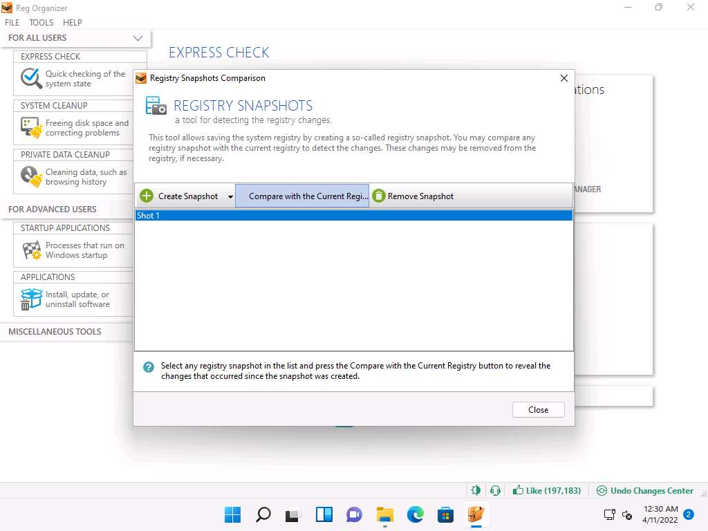
Detecting changes process initializes and after it completes Revealed Differences window appears, as shown in the screenshot.
Note: The list of registry entries' may vary when you perform this task.
You can examine the Registry entries from the left-pane. To do so, expand the nodes, select the entry you want to check and key files appear in the right-pane, as shown in the screenshot.

By examining modified registry entries in the result, you can find any unwanted registry entries on the machine and stop or delete them manually.
Close all open windows on the Windows 11 machine.
You can also use other registry monitoring tools such as regshot (https://sourceforge.net), Registry Viewer (https://accessdata.com), RegScanner (https://www.nirsoft.net), or Registrar Registry Manager (https://www.resplendence.com) to perform registry monitoring.
Task 4: Perform Windows Services Monitoring using Windows Service Manager (SrvMan)
Attackers design malware and other malicious code in such a way that they install and run on a computer device in the form of a service. As most services run in the background to support processes and applications, malicious services are invisible, even when they are performing harmful activities on the system, and can even function without intervention or input. Malware spawns Windows services that allow attackers to control the victim machine and pass malicious instructions remotely. Malware may also employ rootkit techniques to manipulate the following registry keys to hide their processes and services.
HKEY_LOCAL_MACHINE\System\CurrentControlSet\Services These malicious services run as the SYSTEM account or another privileged account, which provides more access compared to regular user accounts, making them more dangerous than common malware and executable code. Attackers also try to conceal their actions by naming the malicious services with the names similar to genuine Windows services to avoid detection.
You can trace malicious services initiated by the suspect file during dynamic analysis by using Windows service monitoring tools such as Windows Service Manager (SrvMan), which can detect changes in services and scan for suspicious Windows services.
SrvMan has both GUI and Command-line modes. It can also be used to run arbitrary Win32 applications as services (when such a service is stopped, the main application window automatically closes).
Here, we will use the SrvMan tool to check for suspicious windows services.
On the Windows 11 machine, navigate to E:\CEH-Tools\CEHv12 Module 07 Malware Threats\Malware Analysis Tools\Dynamic Malware Analysis Tools\Windows Services Monitoring Tools\Windows Service Manager (SrvMan)\x64 and double-click srvman.exe.
Note: You can choose any of the executable files for the Windows Service Manager according to your computer and OS design.
If a User Account Control window appears, click Yes.
The Service Manager main window appears, listing all services available or running on the machine, as shown in the screenshot.
The Service Manager shows the Internal name, State, Type, Display name, Start type, and Executable data of the services.
Here, you can choose any unwanted service that is running on your computer, and Stop or Delete that service by choosing the appropriate action.
You can view the properties of the selected service by clicking on Properties.
To Start a stopped service, click the Start service button. To stop a running service, click Stop service.
To restart any running service, click the Restart service button.
To add a new service to your machine, click the Add service button.
To delete any running or stopped service, click the Delete service button.
Thus, you can monitor the unwanted services running on the machine using the Windows Service Manager.
Close the Service Manager window.
You can also use other Windows service monitoring tools such as Advanced Windows Service Manager (https://securityxploded.com), Process Hacker (https://processhacker.sourceforge.io), Netwrix Service Monitor (https://www.netwrix.com), or AnVir Task Manager (https://www.anvir.com) to perform Windows services monitoring.
Task 5: Perform Startup Program Monitoring using Autoruns for Windows and WinPatrol
Startup programs are applications or processes that start when your system boots up. Attackers make many malicious programs such as Trojans and worms in such a way that they are executed during startup, and the user is unaware of the malicious program running in the background.
An ethical hacker or penetration tester must identify the applications or processes that start when a system boots up and remove any unwanted or malicious programs that can breach privacy or affect a systems health. Therefore, scanning for suspicious startup programs manually or using startup program monitoring tools like Autoruns for Windows and WinPatrol is essential for detecting malware.
Autoruns for Windows This utility can auto-start the location of any startup monitor, display which programs are configured to run during system bootup or login, and show the entries in the order Windows processes them. As soon as this program is included in the startup folder, Run, RunOnce, and other Registry keys, users can configure Autoruns to show other locations, including Explorer shell extensions, toolbars, browser helper objects, Winlogon notifications, and auto-start services. Autoruns Hide Signed Microsoft Entries option helps the user zoom in on third-party auto-starting images that add to the users system, and it has support for looking at the auto-starting images configured for other accounts configured on the system.
WinPatrol WinPatrol provides the user with 14 different tabs to help in monitoring the system and its files. This security utility gives the user a chance to look for programs that are running in the background of a system so that the user can take a closer look and control the execution of legitimate and malicious programs.
In the Windows 11 machine, navigate to E:\CEH-Tools\CEHv12 Module 07 Malware Threats\Malware Analysis Tools\Dynamic Malware Analysis Tools\Windows Startup Programs Monitoring Tools\Autoruns for Windows and double-click Autoruns.exe.
The AutoRuns License Agreement window appears; click Agree.
The Autoruns main window appears. It displays all processes, dlls, and services, as shown in the screenshot.
Note: The application lists displayed under all the tabs may vary when you perform this task.
Click the Logon tab to view the applications that run automatically during login.
Click the Explorer tab to view the explorer applications that run automatically at system startup.
Clicking the Services tab displays all services that run automatically at system startup.
Click the Drivers tab to view all application drivers that run automatically at system startup.
Note: The list displayed under this tab may vary when you perform this task.
You can click on any driver to display its size, version, and the time at which it was automatically run at system startup (for the first time).
Note: The list displayed under this tab may vary when you perform this task.
Click the Known DLLs tab to view all known DLLs that start automatically at system startup.
By examining all these tabs, you can find any unwanted processes or applications running on the machine when the system boots up and stop or delete them manually.
Close the Autoruns main window.
Now, we will find out which applications or processes start when the system boots up using the WinPatrol tool.
On the Windows 11 machine, navigate to E:\CEH-Tools\CEHv12 Module 07 Malware Threats\Malware Analysis Tools\Dynamic Malware Analysis Tools\Windows Startup Programs Monitoring Tools\WinPatrol. Double-click wpsetup.exe to launch the setup.
If a User Account Control window appears, click Yes.
Follow the wizard-driven installation steps to install WinPatrol.
In the Installation completed wizard, make sure that the Start the application options is checked, and then click Finish. This will automatically launch the application.
The WinPartol application window appears with the PLUS tab open by default. Click the Startup Programs tab.
Select any program that affects your system bootup (here, OneDrive) and click Disable, as shown in the screenshot.
Note: The screenshot may differ when you perform this task.
The OneDrive program will be deleted from the Startup Programs list. This is how to manage the Startup Programs for a Windows machine.
Now, switch to the IE Helpers tab. It shows all toolbars and links loaded by IE or other windows component. Select duplicate or non-required programs (here Java(tm) Plug-In SSV Helper), and then click Remove.
Note: If a pop-up appears, as shown in the screenshot. Click Yes to proceed.
Switch to the Services tab to display the installed services on your system. Select any service and click Info, as shown in the screenshot.
A window showing the service information appears. To disable a service, select Disabled from the drop-down list and click Apply, as shown in the screenshot. Click Close to exit the window.
Switch to the File Types tab to view the programs associated with a file. Select a program and click Info to view the available information.

The Windows Batch File window appears, as shown in the screenshot. Click Expand Info to view the full info about the program.
The expanded view shows all information related to the program and its associated file, as demonstrated in the screenshot. Analyze the info and close the window.
Now, switch to the Active Tasks tab to view the current tasks running on your computer. Select any task and click Kill Task to end the task, as shown in the screenshot.
By examining all these tabs, you can find any unwanted process or application running on the machine when the system boots up and manually stop or delete them.
Close all open windows on the Windows 11 machine.
You can also use other Windows startup programs monitoring tools such as Autorun Organizer (https://www.chemtable.com), Quick Startup (https://www.glarysoft.com), or Chameleon Startup Manager (https://www.chameleon-managers.com) to perform startup programs monitoring.
Task 6: Perform Installation Monitoring using Advanced Uninstaller Pro
When the system or users install or uninstall any software application, there is a chance that it will leave traces of the application data on the system. Installation monitoring help to detect hidden and background installations that malware performs.
Advanced uninstaller pro automatically monitors what gets placed on your system and allows you to uninstall it completely. Uninstaller pro works by monitoring what resources such as file and registry, are created when a program is installed. It provides detailed information about the software installed, including how much disk space, CPU, and memory your programs are using. It also provides information about how often you use different programs. A program tree is a useful tool that can show you which programs were installed together.
Here, we will use the Advanced Uninstaller Pro tool to detect hidden and background installations.
In the Windows 11 machine, navigate to E:\CEH-Tools\CEHv12 Module 07 Malware Threats\Malware Analysis Tools\Dynamic Malware Analysis Tools\Installation Monitoring Tools\Advanced Uninstaller pro and double-click Advanced_Uninstaller13.exe.
Note: If Open File - Security Warning wizard appears, click Run button.
Note: If a User Account Control window appears, click Yes. Make sure that Pin Advanced Uninstaller Pro to taskbar option is unchecked in select Additional Tasks window.
Follow the installation steps to install Advanced Uninstaller Pro.
After successful completion of setup a Advanced Uninstaller Pro main window appears, along with a list of options as shown in screenshot below.
Note: Close the browser window If a Advanced Uninstaller Pro page appears.
Click the Uninstall Programs tab from General Tools section to view the programs installed on your machine.
You can choose any unwanted or unused application and click Uninstall (1) button from right pane to remove it from your machine. In this task, we are choosing the WinPatrol application.
Note: The WinPatrol pop-up appears; click Reject Change.
While uninstalling the application, a selected program pop-up appears, click Yes in all the WinPatrol pop-ups.
The Application uninstall clean-up pop-up appears; click Next.

The cleanup finished message appears; click Done.
The selected application is uninstalled from your computer. Close the window.
Click on Monitored Installations tab under General tools section. In this tab you can start monitoring a program's installation and create logs during setup.
Similarly you can check Startup Manager, Service Manager and Start Menu Cleaner tabs under General Tools section.
From Startup Manager window you can view and terminate currently running programs. Here, you can uncheck any program from the list to terminate the program.
From Startup Manager window you can view the programs that run automatically on Windows Startup. In this task, Advanced Uninstaller Pro has detected startup programs. Choose any application that you want to disable on startup and uncheck it.
Similarly you can clean the shortcuts from Start Menu Cleaner window as shown in the screenshot below.
You can restart the machine to detect the startup programs.
This is how to monitor a Windows machine using Advanced Uninstaller Pro. Close all applications.
You can also use other installation monitoring tools such as SysAnalyzer (https://www.aldeid.com), REVO UNINSTALLER PRO (https://www.revouninstaller.com), or Comodo Programs Manager (https://www.comodo.com) to perform installation monitoring.
Task 7: Perform Files and Folder Monitoring using PA File Sight
Malware can modify system files and folders to save information in them. You should be able to find the files and folders that malware creates and analyze them to collect any relevant stored information. These files and folders may also contain hidden program code or malicious strings that the malware plans to execute on a specific schedule.
An ethical hacker or penetration tester must scan the system for suspicious files and folders using file and folder monitoring tools such as PA File Sight to detect any malware installed and any system file modifications. PA File Sight is a protection and auditing tool. It detects ransomware attacks coming from a network and stops them.
Features:
- Compromised computers are blocked from reaching files on other protected servers on the network
- Detects users copying files and optionally blocks access
- Real-time alerts allow the appropriate staff to investigate immediately
- Audits who is deleting, moving, and reading files
On the Windows 11 machine, navigate to E:\CEH-Tools\CEHv12 Module 07 Malware Threats\Malware Analysis Tools\Dynamic Malware Analysis Tools\Files and Folder Monitoring Tools\PA File Sight and double-click FileSight_Trial_Key_E71BE154-2386-4CF3-BEA3-75830C985736.exe.
Note: If a Open File - Security Warning window appears, click Run. If a User Account Control window appears, click Yes.
Note: The name of the exe file might differ when you perform the lab.
The Select Setup Language pop-up appears; choose your preferred language, and then click OK.
Follow the default installation steps to install PA File Sight.
Start Your Trial! window appears, ensure that Ultra radio button is selected and click Install Trial License.
A Success window appears, click OK.
Completing the PA File Sight Setup Wizard appears; make sure that both the Start the PA File Sight monitoring service and the Launch the PA File Sight Console options are checked, and click Finish.
This will run the PA File Sight service and automatically launch the application.
The PA File Sight Console window appears. By default, the Local host radio button is selected; click OK.
The PA File Sight Ultra Console main window appears.
Note: If a Start Wizard window appears, close it.
Click CEHv12 Windows Server 2022 to switch to the Windows Server 2022 machine Click Ctrl+Alt+Del to activate the machine, by default, CEH\Administrator account is selected, type Pa$$w0rd in the Password field and press Enter.
Navigate to Z:\CEHv12 Module 07 Malware Threats\Malware Analysis Tools\Dynamic Malware Analysis Tools\Files and Folder Monitoring Tools\PA File Sight and double-click FileSight_Trial_Key_E71BE154-2386-4CF3-BEA3-75830C985736.exe.
Note: If a Open File - Security Warning window appears, click Run.
Note: The name of the exe file might differ when you perform the lab.
The Select Setup Language pop-up appears; choose your preferred language and click OK.
Click the Next button until you see the Select Components wizard.
In the Select Components wizard, uncheck the Central Monitoring Service and Console User Interface (configure all Services) options, and check the Satellite Monitoring Service (reports to the Central Monitoring Service) option; then, click Next.
Follow the wizard-driven installation steps to install the application.
In the final step of the installation, make sure that the Start the PA File Sight Satellite Monitoring Service and Configure the PA File Sight Satellite service options are checked; then, click Finish.
The Configure Satellite Monitoring Service window appears; type the Windows 11 IP address into the Central monitoring service address field along with port 8000. Leave the other settings to default and click Apply Settings.
Note: In this task, the IP address of the Windows 11 machine is 10.10.1.11.
Click Stop Satellite Service to stop the satellite service.
Once the service is stopped, click Start Satellite Service.
Once the service has started, click Exit to close the application.
Create a folder named File Monitoring on Desktop and open it. Create a new text document in the folder, name it Secret.txt, type some text content in the file, and save it. Close the notepad window.
Click CEHv12 Windows 11 to switch back to the Windows 11 machine, and observe that PA File Sight starts monitoring the Windows Server 2022 machine.
Expand the Server2022 node, select Inventory Collector in the left-hand pane, and click the Apply button from the right-hand pane.
Now, right-click on Inventory Collector and click Run Now! from the context menu.
Select Server2022 in the left pane and scroll down in the right pane, and you can see the complete system information for the Windows Server 2022 machine on the dashboard.
Right-click on Server2022 and click the Add New Monitor option from the context menu.
The Add New Monitor window appears, select the File Sight Monitor icon, and then click OK.
The File Sight Configuration window appears; click the Browse button to provide a path for directory monitoring for the Server2022 machine (here, C:\Users\Administrator\Desktop\File Monitoring) and tick the Fire actions for each event separately checkbox.
Choose Audit file activity from the Monitor Purpose (for configuration help) drop-down list, and then click Actions.
The Monitor Actions window appears; click New under Global Action List.
The Add New Action window appears. Select the Action List icon and click OK.
The Action List window appears. Type a description in the Description field and click Add to choose actions.
The Choose Action to Add window appears; choose any action from the list and click OK.
Click OK in the Action List window.
The Monitor Actions window appears; choose the newly created action (here, Monitoring File); and then click the << icon to add the action.
Once the action is added to the Monitor Actions window, click OK.
In the File Sight Configuration window, click the File Activities tab and check the Existing file is written to and Ignore file appends (this is useful for monitoring log file integrity) options. Leave the other settings to default and click OK.
Under the Server2022 node, Watch node will be added, select it and click Apply from the right-pane. Then right-click on the File Monitoring / Watch node and click Run Now! from the context menu.
Click the Server2022 node to view the dashboard. Scroll down in the dashboard; observe that the File Monitoring directory is being monitored.
Click CEHv12 Windows Server 2022 to switch to the Windows Server 2022 machine Click Ctrl+Alt+Del to activate the machine, by default, CEH\Administrator account is selected, type Pa$$w0rd in the Password field and press Enter. Open Secret.txt in the File Directory on Desktop, modify some of the text in the file, and then Save and close the file.
Click CEHv12 Windows 11 to switch back to the Windows 11 machine and observe that PA File Sight has recorded some activity in the notepad file, as shown in the screenshot.
The software even shows the File Accessed/min in the graphical method, as shown in the screenshot.
Click on the notepad.exe link to view the activities done by the user.
The CEH\Administrator notepad.exe window appears. If it shows a blank window, then click CEHv12 Windows Server 2022 to switch to the Windows Server 2022 machine, type some content into the Secret.txt file, save the file, and then immediately click CEHv12 Windows 11 to switch back to the Windows 11 machine to view the activity.
If you have added some text in the Secret.txt file, you can view that in the activity window.
Click CEHv12 Windows Server 2022 to switch back to the Windows Server 2022 machine and delete the Secret.txt file, then click CEHv12 Windows 11 to switch back to the Windows 11 machine. Wait for a while and an Alert from Windows11 pop-up appears, indicating an internal error, as shown in the screenshot.
Now, scroll down to view the Recent Alerts section; in the Full History option, select 1 day link. You will find that the file has been deleted, as shown in the screenshot.
This is how to monitor the file integrity using PA File Sight.
Close all open windows.
You can also use other file and folder integrity checking tools such as Tripwire File Integrity and Change Manager (https://www.tripwire.com), Netwrix Auditor (https://www.netwrix.com), Verisys (https://www.ionx.co.uk), or CSP File Integrity Checker (https://www.cspsecurity.com) to perform file and folder monitoring.
Task 8: Perform Device Driver Monitoring using DriverView and Driver Reviver
When the user downloads infected drivers from untrusted sources, the system installs malware along with the device drivers; malware uses these drivers as a shield to avoid detection. One can scan for suspicious device drivers using tools such as DriverView and Driver Reviver that verify if they are genuine and downloaded from the publishers original site.
DriverView The DriverView utility displays a list of all device drivers currently loaded on the system. For each driver in the list, additional information is displayed such as the load address of the driver, description, version, product name, and developer.
Driver Reviver Without proper drivers, computers start to misbehave. Sometimes updating the drivers using conventional methods can be a daunting task. Outdated drivers are more vulnerable to hacking and can lead to a breach in the system. Driver Reviver provides an effective way of scanning your PC to identify out of date drivers. Driver Reviver can quickly and easily update these drivers to restore optimum performance to your PC and its hardware and extend its life.
An ethical hacker and penetration tester must scan the system for suspicious device drivers and make sure that the systems runs smoothly by ensuring that all outdated drivers are updated and that the system processes optimized to keep the performance of the system at its peak.
On the Windows 11 machine, navigate to E:\CEH-Tools\CEHv12 Module 07 Malware Threats\Malware Analysis Tools\Dynamic Malware Analysis Tools\Device Drivers Monitoring Tools\DriverView and double-click DriverView.exe to launch the application.
The DriverView main window appears with a list of the installed drivers on your system, as shown in the screenshot.
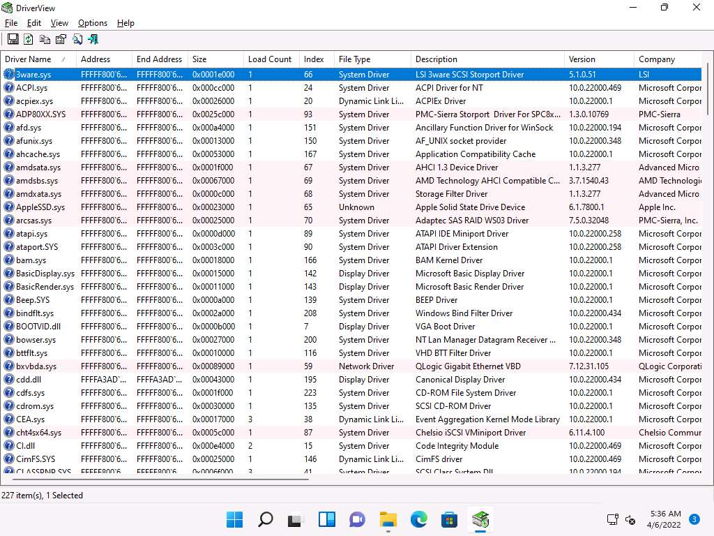
Right-click on any driver from the list and click Properties to view the complete details of the driver.
The Properties window appears with the complete details of the installed driver, as shown in the screenshot. Once the analysis is done, click OK.
This is how to monitor the drivers installed on a machine. Close the DriverView window.
Now, we will see how to update system drivers and optimize the PC performance using Driver Reviver.
On Windows 11, navigate to E:\CEH-Tools\CEHv12 Module 07 Malware Threats\Malware Analysis Tools\Dynamic Malware Analysis Tools\Device Drivers Monitoring Tools\Driver Reviver. Double-click DriverReviverSetup.exe to launch the setup.
If a User Account Control window appears, click Yes.
Driver Reviver Setup window appears, click Next to install the tool.
Installation window appears and after the completion of installation, Driver Reviver initializes the scan for drivers, as shown in the screenshot.
Note: If a browser window opens automatically close the browser.
After the scan finishes, a list of system drivers are displayed.
Along with the list of drivers you can see their Status as OUTDATED or UP TO DATE.
Note: Here, all the drivers are already up to date.
Note: The result might vary when you perform this task.
If the drivers are outdated then you can click Update All button to update all the drivers.
Now, navigate to the Home tab, here you can view information such as System details, System, Processor, Graphics, Memory(RAM) and Hard Drives, as shown in the screenshot,
Navigate to the Backup tab, here you can create Backup or Restore the system drivers.
Uninstall the Driver Reviver software by navigating to Control Panel --> Programs --> Uninstall a program.
Note: While uninstalling, remove all the files of tools from the system.
Close all open windows.
You can also use other device driver monitoring tools such as Driver Booster (https://www.iobit.com), Driver Easy (https://www.drivereasy.com), Driver Fusion (https://treexy.com), or Driver Genius 22 (https://www.driver-soft.com) to perform device driver monitoring.
Task 9: Perform DNS Monitoring using DNSQuerySniffer
DNSQuerySniffer is a network sniffer utility that shows the DNS queries sent on your system. For every DNS query, the following information is displayed: Host Name, Port Number, Query ID, Request Type (A, AAAA, NS, MX, and other types), Request Time, Response Time, Duration, Response Code, Number of records, and the content of the returned DNS records. You can easily export the DNS query information to a CSV, tab-delimited, XML, or HTML file, or copy the DNS queries to the clipboard and then paste them into Excel or another spreadsheet application.
Click CEHv12 Windows Server 2022 to switch to the Windows Server 2022 machine Click Ctrl+Alt+Del to activate the machine, by default, CEH\Administrator account is selected, type Pa$$w0rd in the Password field and press Enter.
Navigate to Z:\CEHv12 Module 07 Malware Threats\Malware Analysis Tools\Dynamic Malware Analysis Tools\DNS Monitoring Tools\DNSQuerySniffer, and then double-click DNSQuerySniffer.exe.
The main window of DNSQuerySniffer appears, along with the Capture Options window.
Note: If the Capture Options window does not appear, then navigate to the Options menu and select Capture Options.
In the Capture Options window, ensure that the **WinPcap Packet Capture Driver ** option is selected under the Capture Method field.
In the Select network adapter section, select the Windows Server 2022 network adapter (here, Ethernet).
Click OK to start sniffing.
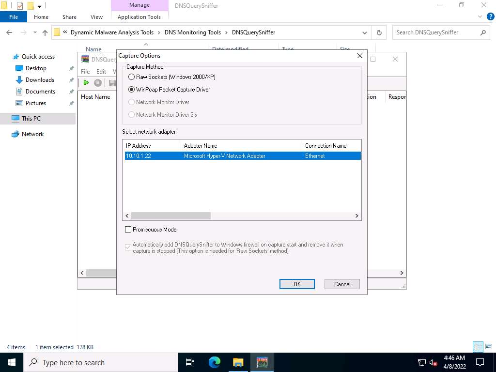
The DNSQuerySniffer starts monitoring the network traffic and takes some time to capture the traffic. Leave the window intact. It shows the DNS queries sent on your system along with its complete information such as host name, port number, request time, response time, duration, source address, and destination address, as shown in the screenshot.
Note: It takes approximately 5 minutes to capture the traffic.
Note: To view the Source Address and Destination Address columns, scroll to the right side of the window.
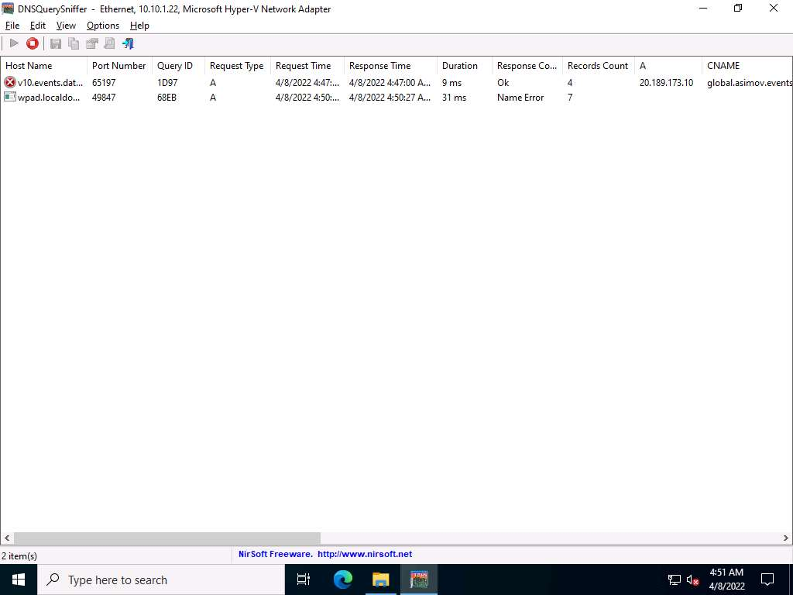
As you can see in the above screenshot, the DNS address is 8.8.8.8.
In real-time, attackers will use malicious applications like DNSChanger to change the DNS of the target machine. For demonstration purposes, we are changing the DNS of the Windows Server 2022 machine in the Network & Internet settings.
Right-click on the Network icon in the lower-right corner of Desktop and click Open Network & Internet settings.
The Network Status window appears. Click Change adapter options under Change your network settings.
Right-click on the network adapter (here, Ethernet) and click Properties.
The Adapter Properties window appears. Select Internet Protocol Version 4 (TCP/IPv4) and click Properties.

The Internet Protocol Version 4(TCP/IPv4) Properties window appears. Change the Preferred DNS server with the Windows 11 IP address and click OK. In this task, the Windows 11 IP address is 10.10.1.11.
Click OK, and then Close the Adapter Properties window.
Switch to the DNSQuerySniffer window; observe the few recorded logs for which DNS has changed.
Note: Wait for approximately 10 minutes to capture the logs.
Right-click on the log for which DNS has changed and select Properties from the context menu.
In the Properties window, observe that there is a change in DNS. Click OK to close the window.
After completion of the task, go to the network settings, change DNS 8.8.8.8 in the Windows Server 2022 machine, and close all applications.
Close all open windows.
You can also use other DNS monitoring/resolution tools such as DNSstuff (https://www.dnsstuff.com), or Sonar Lite (https://constellix.com) to perform DNS monitoring.